Travel diaries 2008
- New Zealand (Forder lectureship),
April
- Mahdia, Tunisia, May
- Dublin, Ireland, July
- Lisbon, Portugal, July
- Rome, Italy, September
- New Zealand and Australia, December –
January
11 May 2008
I realised when I got up that I hadn't checked for closures on the
Underground. The chance of an unaffected journey at weekends is currently
quite low. So I left half an hour earlier than I had intended, and of course
had a very quick journey. The sun shone and the trees were covered in
blossom: hawthorn of various tints, horse chestnut, wisteria, and some
tree in west London with purple candles. The parks very green.
I also realised that I had left the USB stick containing my talk behind; but
a copy was on the white toy, so I bought a cheap 1 Gb stick at the airport
and copied the talk onto it. No delays checking in. The girl at the desk
thought at first that I was very early for the 4pm Tunis Air flight, and
she couldn't check me in; but the misunderstanding was soon corrected. She
also encouraged me to take two bags with me. I explained that I was checking
the second one because it contained toothpaste.
The flight left slightly late because of airport congestion. In a light haze
with some well-shaped cumulus tops, we crossed the patchwork fields of
England, the blue Channel, and the patchwork fields of France. Flowering rape
gave a conspicuous yellow among the brown and shades of green of the fields.
We landed in Paris after forty minutes; the crew had hardly finished serving
the snack.
Charles de Gaulle was something of a nightmare. First, it was a major
excursion from terminal 2E to 2F, with a very clunky security check;
I only arrived five minutes before the flight started
boarding. Then the most absurdly stupid thing happened. We went through the
gate, down the steps, and onto a bus. After some delay, the bus took us about
twenty metres to another gate, where we went up the stairs and through the
airbridge onto the plane. During this amazing shuffle, I met up with Peter
Erdős and Ivo Rosenberg, also en route to the conference; Peter had missed
his connection due to a mistake in the ticketing, and had had to wait four
hours in this dreadful airport. He was quite close to the edge.
|
At least, after that, we managed to leave on time. Over Paris, more hazy
patchwork fields, more and denser cloud tops. They put on a fine display:
sharp-edged tumbles, wispy streaks, light almost solid enough to touch,
pockets of darkness. Once, a hole in the clouds showed the green earth,
with a hilltop village and walled fields. But soon the clouds joined up
into a featureless white blanket.
A tasty lunch came round, Air France keeping some standards at least.
But things change: the mini-bottle of red wine informed me that it was
Cabernet Sauvignon Merlot, produced in France, but you had to turn the
bottle around to find that it was a Pays d'Oc. By the sort of freak echoes
that often occur in aeroplanes, I could hear one side of a conversation in
the row behind me loud and clear.
|
|
After lunch I worked on my Manchester talk, and then we were in the cloud
and descending to Tunis. After a while the sea came into view, then a long
rugged headland protecting a beach enclosing a large lagoon. Several further
lagoons followed, and we came down across one to land at the airport, with
views of a town of flat white buildings.
Then the fun started. I had learned from the Tunisian Embassy website that,
unlike almost everyone else, I needed a visa, which I could get on arrival.
So it turned out. They directed me to a little office away from the
immigration queue, where my passport was taken and I was directed to a
waiting room where a television was playing and a man (who seemed to have
been there for some time) was sitting. After a while they came back and said
I needed to pay ten dinars. Of course I didn't have this, having read that
Tunisian currency cannot be taken out of the country and can only be obtained
on arrival. So the official took me past the immigration queues, through
customs (where, however, I had to put my bag through the scanner), and through
the exit gate.
There were Ivo and Peter with Maurice Pouzet and several local people. They
greeted me warmly, but I tried to explain briefly what the situation was and
hurry on. However, one of the locals produced a ten-dinar note. So we went
back through a different door, past customs, past immigration, to the visa
desk where I handed over the ten-dinar note and got my passport with visa.
By this time the people on the immigration desk knew about me and waved me
through past the long queues. After a bit of a hunt, I found that my other bag
had been taken off the belt and left in a pile of luggage. Finally I could
go through customs and out the exit door and rejoin the other mathematicians.
They took those of us there for a coffee while waiting for two more delegates
on a different flight. Then we had another quite long wait for the minibus
(or maxi-taxi, perhaps), but finally just before 8pm we were off.
The first part of the journey was straightforward, along a four-lane toll
road with not too much traffic (the only big vehicles were trucks with loads
of hay). Out of the town, we came to some hills; the biggest one had lights
and masts on top, another had had its face quarried away. On the flat ground
at the base of the hills were orchards, vineyards, and what looked in the
fading light like fields of ripening wheat -- can this really be so, so early
in the year? the dryish grass at the roadside suggests that it is. As it
became darker, I could dimly see the hills drawing back, and lights of a
town which seemed to be on the sea in the distance.
We turned off the toll road, and had a long stretch on a steadily deteriorating
road through urban sprawl, with lots of speed bumps and roundabouts, and much
heavier traffic including stopping buses. At least Mahdia appeared on the
signs at this point! This went on for a long time until
we left the town and found ourselves on a narrow winding road through low
scrub. After a few kilometres of this, we turned left at a roundabout, and
a few more kilometres brought us to Mahdia. A fairly long slog through the
town, and we stopped at the vast imposing gates of the Nour Palace Hotel.
A flunkey opened the gates and we drove in and disembarked.
We had to fill in forms identical to the landing card except for one extra
question, room number, which of course I couldn't answer! I got my key and
headed for my room. Confusingly the numbers in the lift are displaced from
those used by the desk, so that room 4047 on the fourth floor is on the first
floor according to the lift.
I thought I was far too worked up to sleep, but I dropped off as soon as I
hit the pillow, and was only woken by somebody using the bathroom next morning.
(There is not much in the way of soundproofing.)
12 May 2008
|
The view from my window shows a derelict open area with a few palm trees,
bounded by a white fence on the far side. This is the Zone Touristique, and
no doubt the plan is that it will be covered in hotels before too long.
But maybe the world economy will crash first.
After bathing and dressing I felt better, and went to find breakfast. The
dining room is absolutely vast, and has many serving points with no clear
pattern. I took something which may have been a Tunisian breakfast, consisting
of some bland sausages with pickled marrow and aubergine, juice, coffee and
fruit.
|
|
A sparrow was trapped in the dining room, and its cries were echoing round
the room, which seems to have very bad acoustics.
I was disturbed to see a greengrocer's apostrophe in the conference acronym
ROGIC'S (particularly inappropriate since CS stands for Computer Science).
After breakfast, there was no sign of registration, but I found Nejib Zaguia,
who got my pack and badge for me and showed me the conference room. The
conference pack is the nicest such I have ever seen, a briefcase made of
beautiful soft leather and woven raffia, varnished against the rain; and
the conference book is one of the thickest I have seen, running to nearly
six hundred pages. To my dismay, the
projector was at an angle to the screen, and the computer started up the
PDF file with some program which used different keystrokes and gave two
exposures (differently aligned) per page. The first problem was resolved
after the opening ceremony by moving the table; the second was caused by
Ghostview, and was cured by opening the file with Acrobat instead.
The opening ceremony had been scheduled to start at 8:30 and last for 90
minutes. To everyone's relief, it kicked off about 9:45 and was quite brief.
Then was my talk, introduced by Jarik Nešetřil.
I was a little distracted by
the fact that Maurice Pouzet was so obviously enjoying it, and perhaps went a
little bit faster than I should have done. My watchstrap broke halfway
through; I managed to deal with it, and some people didn't even notice,
but it meant I had to guess the finishing time (which I did within two
minutes). The talk elicited several good comments, including a pointer
from Stephan Thomassé to some similar work.
The session I went to after coffee was distinguished by a speaker using an
indelible pen on the whiteboard (why were indelible pens put out?), which
Maurice (as chair) tried unsuccessfully to fix in real time.
For lunch I had some (rather dry) tuna in Sfax style, with lots of nice
vegetables. It seems you only get water if you pay for it. No problem, there
is water outside the conference room.
In the afternoon, the lecture rooms were extremely stuffy and airless, and
the doors were kept closed because of the noise. Small wonder that I fell
asleep several times. After the tea break, which had become reduced to ten
minutes because previous talks had overrun so badly, I decided that I would
just have to skip a session, so stood in the air on the terrace (with drizzle
threatening) talking to Debbie and Fiona.
Laflamme, in his talk, mentioned a theorem of Imrich and others according to
which the random graph can be partitioned into two subsets such that the only
automorphism fixing the two subsets is the identity. Later Stephan
Thomassé told me that he could do it so that each subset induces a copy
of the random graph. This led me to wonder whether such partitions can be
in any sense generic.
|
After the talks, we were divided into two parties and taken on a tour of
Mahdia by "small train". I was on the first tour and sat next to Peter
Erdős.
He is possibly even more cynical than I, but I think we egged one another on
a bit. Certainly the picture we got of the town is a vast area being covered
with hotels, where the building standards seem extraordinarily lax, and
an old town where the many of the buildings are in quite poor shape. Lots of
people were selling things in the street but nobody was buying. The point,
Cap Afrique, surrounded by a huge cemetery, was the only place of interest.
At one point we passed what was said to be a giant swordfish, but I could
only see its tail; it might have been a mermaid in a veil, for all I could
tell. I will try to walk back there at some point; a train is not the best
way to see such things.
|
|
After the tour I had dinner with Jarik, who thinks that there is a proof that
my problems about hulls are NP-hard, based on an argument about uniquely
colourable graphs. Certainly, if a graph G is uniquely colourable but
not complete multipartite, then h(G) takes the
larger of the two possible values. Jarik's argument seems to hinge on the fact
that the categorical product of a graph G with the complete graph of
size k is uniquely k-colourable if and only if G has
chromatic number bigger than k -- a fact which I can presumably prove
for myself.
After dinner I finished off my Manchester talk and wrote up this diary.
I went to finish the session with a game of patience. About halfway
through, the computer put up an alert box telling me that it was impossible
for me to win, and inviting me to try another game. Of course, I ignored it
and continued; needless to say, I did win. What's going on?
13 May 2008
They have candles by the bedside. Does this mean there are frequent power
cuts? And do they expect people to smoke, and have matches or lighters?
People smoke in the lounge, which already seems rather strange to me.
The sun was shining brightly, with only light cloud. At breakfast I discovered
that they have loquats, so I had a couple. Very nice!
In the second talk, the small screw fell out of my glasses. Fortunately it
wasn't lost, and I got it back in; Fiona (whose fingernails were longer than
mine) tightened it as best as possible. Everything is falling apart!
The talk I was in finished a little early so we were down to the coffee room
by 9:45. The person guarding the coffee insisted that it was not available
until 10 (even though the program showed 9:50). I knew what would happen, so
I walked outside; when I came back in, he had yielded to the irresistible
force and was allowing people to take their coffee.
|
After a quick lunch I seized my chance to see the town, and set out walking
down the beach (having put off a hotel flunkey who wanted to give me a
guided tour). The beach was lovely: many beautiful shells, a few jellyfish,
very pale sand and blue water, glorious sunshine. But far too many hotels,
with their thatched beach umbrellas taking up too much space. Finally I
reached the town.
In town the esplanade was lined with palm trees, and there were planes in the
squares and a few Norfolk pines; a very few flowers in beds round some of the
palms.
|
|
|
There wasn't time to go to the point, so I walked randomly
through the narrow streets. This was so much better than the train trip:
lovely carved doors, some of them open and showing lovely wall tiles inside;
a shaded square opposite the mosque, and another one with tables and chairs
(many occupied) a little further along. There were shops selling carpets,
fabric, the brown flower-like crystals, and many other things; but they all
seemed to be having a lunch break and almost nobody invited me to buy
anything.
|
|
|
On the way back, I decided to stick to the road, since I was short of time.
It may have been faster going than the beach, but I am sure it was further,
since the road wound so much. But I did pass the swordfish, and could verify
that it was indeed a swordfish. Two men were digging at its base, and gave me
a wave as I passed.
On the way back, many more flowering shrubs: oleanders, hibiscus,
plumbago, bougainvillea. Lots of sparrows but no other birds. From some
stretches, there were views of the beach over the sand dunes, but the road
randomly wandered away from the beach, and was far from being the most direct
route back.
|
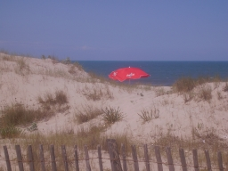
|
After some nervous moments, I arrived back only a couple of minutes late for
Peter Erdős' talk.
After the coffee break, the session I was in found itself without a chair,
so I had to step in and do the business. This session included both Fiona
and Debbie; Fiona did a good job, if a little breathless, while Debbie
could have been more commanding than she was. But at least she got a question
which she was able to deal with effectively.
For the conference dinner, we had been instructed to assemble by the pool
at five to seven. I (and several others) smelt a photograph, but we were
wrong. After a while, we heard the sound of music, and a group made up
mostly of drummers came striding along the path, including one man on the
oboe and one holding a bucket of hot coals. (The sky was threatening a storm,
but maybe it was so unseasonably cold that the musicians had to keep warming
their instruments over the fire. At least, I don't know if that was the reason,
but that is what happened.) After giving a performance at the poolside, they
strode on into the hotel, beckoning us to follow.
In the doors they went and up the stairs. Most of the other hotel guests
were entranced, but a few went by with their hands over their ears. (We
knew from some of the talks that the hotel is a noisy place where every
sound reverberates, so this concentrated drumming was quite ear-splitting.)
They stopped in an open area and gave us another performance. Astonishingly,
the man with the fire bucket spilt a few burning coals on the hotel floor;
unperturbed, he simply picked them up and put them back in the bucket. After
a while, we were waved to our seats for the banquet.
Apart from the soup and the lamb, every dish was a collection of small but
tasty items, so we got to sample a wide range of things. Before the main
course of lamb, the chef came in with great ceremony and cut off the top
of a terracotta pot with a lethal weapon. The dessert included a few dates,
the rest being extremely sweet pieces of pastry or sweetmeats. While
we ate, we were regaled by a completely different sort of music, a man with
a lute and a backing track playing cheesy old standards such as It's Now or
Never, My Way, Something Stupid, Hotel California.
14 May 2008
It is clear that, as the word "vain" means "empty" as well as "self-important",
the derived noun "vanity" should share both meanings. The hotel in New
Zealand had a "vanity kit", and I thought only of this meaning until I saw
the title of Schopenhauer's essay "On the vanity of existence". Similarly,
"apparent" means both "obvious" and "not real", but I only attributed the
second meaning to the adverb "apparently" until Jack van Lint used it in
a mathematical paper with the first meaning.
The day was even more lovely than yesterday. But we had talks from 8:30am
until 10pm with little in the way of breaks. We started with a nice talk by
Jarik, on the theorem that, given a finite set of finite structures, we can
expand them with unary relations so that the structures forbidding these
form a Fraïssé class; the reduct of its
Fraïssé limit is the universal
structure forbidding homomorphisms from the original class.
In the break, Honza Hubička outlined to me his proposed new construction of
the countable generic poset. In some ways it was reminiscent of my work on
cubes with Sam Tarzi. I promised to send him the paper.
There was a talk on the orbit structure of an arbitrary group of
orientation-preserving homeomorphisms of the real line. A nice theorem, but
it came at the end of a long sequence of fearsomely technical slides.
I had lunch with Geña and Robert and then sat in the sun. There were
many loud sparrows, but I saw other birds too: a pair of blackbirds (first in
a palm tree and then on the lawn) and a swallow flying.
The afternoon saw a lovely talk on homomorphism-homogeneous digraphs by Dragan
Masulović. People are beginning to take this stuff up! The most spectacular
observation is that the X-condition, which also arises in Debbie's work, is
the Riesz Interpolation Theorem in the case of differentiable functions
(with the pointwise order), which is thus a HH poset. He speculated that
homogeneity could replace some of the analytic arguments.
Anthony Bonato asked me a nice question. Start with either an edge or a nonedge.
At each time step, add one vertex joined to each pair of vertices in the
existing set. Are the resulting graphs isomorphic or not?
Then I was stuck in a lecture I didn't intend: I wanted to hear about
semifields and Hasse--Weil but the schedule had been changed and no
information provided. Also it is rumoured that there is a barbecue tonight:
Geña was assured so by the hotel desk but again there has been no
information. I am hoping there will be information about airport transport
at some point.
|
When I escaped, I went to my room to shower. The toilet wasn't working, but
by jiggling it I managed to get it to go. I went downstairs to the poolside,
where people were slowly beginning to gather. It was a lovely evening, with
four birds of prey circling against a sunlit cloud in the deepening sky, and
the white buildings of the Mahdia medina on its point hovering over the sea.
Eventually we were invited to the tables. The barbecue was somewhat
slow-moving, and it was necessary to spend quite a bit of time queueing,
but between the queues we had a pleasant evening eating. (When I got to the
head of the queue, the sardines were not ready, so I made do with shrimps
and meat; pleasant, though the meat was very tough.) Inevitably we fell
further behind, so that the honorary talks by the two conference honorands
didn't start until 9:30, and we didn't finish until 11. Maurice Pouzet
gave a very characteristic talk full of ideas.
|
|
After the talks, receipts were finally available, and we were promised details
of transport in the morning. Maurice had two problems to pose to me: first,
whether a Steiner triple system in which all 2-point deleted structures are
isomorphic necessarily has a 2-set transitive group; and second, whether an
age with empty kernel and polynomial growth has a finitely generated algebra.
I was also asked a question about reconstruction of graphs which I couldn't
answer. By this time I really was quite tired, so I snuck off and went to bed.
15 May 2008
The person next door has an alarm which goes off repeatedly from 6am. From
this point I was unable to get much sleep, so eventually I got up and packed.
The day was hot and clear, but a bit hazy. No word about travel arrangements.
I went and had breakfast and then showed up for the talks. There were two
talks in parallel sessions, and then two plenaries, the second by Ivo
Rosenberg. Near the start of the first plenary, Jarik came and sat behind me
and told me that he and I were to go in a taxi together which would leave in
half an hour, so that it would be necessary to miss Ivo's talk, and even the
last part of the talk we were in.
I snuck out at a convenient break, and waited in the lobby. Several people
came to say goodbye, or to ask me mathematical questions: I had to put off
the latter, since the taxi driver was already there, and we were only waiting
for Jarik. Finally we were off.
The same route as arrival, but quite a different impact during the day.
The first stretch had many olive groves bordered with prickly pear, then
we were in the urban stretch. Traffic was quite bad, and often we were
brought to a standstill. The towns were full of photographs of the President
of the Republic, big statues, new buildings going up, and so on. Occasionally
there were glimpses of the sea.
Finally we got onto the toll road, and the driver put his foot down. He
was driving at 180 whenever he could, talking almost non-stop on his mobile,
and gesticulating violently whenever someone else did something stupid
(which was by no means infrequent). At one point he asked us if we wanted
a drink, and pulled up at a service station and bought us coffee. Later, he
was pulled over by a police patrol for driving without a seatbelt. This
took several minutes, during which the two policemen were very good-humoured
and laughed aloud. When he got back in the car he shrugged and said it was
an act of God (I wouldn't have thought so).
The countryside was quite flat except for the hills near Tunis, with mostly
olive trees, but some figs and other fruit, vines, barley, etc., especially
further north. But there were stretches of completely unproductive flat
ground near the coastal lagoons. From the service station there was quite
a striking view over this flat ground to the coast lined with eucalyptus
trees, with two lines of light formed by the lagoon and the sea beyond.
At one place we crossed some water, and I saw a flock of birds that might
have been flamingoes (though they were not pink) or storks.
Finally we were at the airport. The driver didn't know where to go and had
to stop and ask a couple of times, though the signs were completely clear.
On the way he had been telling us that they only paid him five dinars for
the trip, and I was prepared for him to ask for a substantial sum; but he
didn't, and gracefully accepted a ten-dinar tip.
We went into the terminal, and Jarik checked in; my flight wasn't yet ready
for checkin, so we sat and talked for a while until it opened. On the way
through departure checks, I noticed that the people ahead of us had departure
cards; the queues were short, so we decided to brazen it out. Jarik went first
and got through, but I was sent back to fill in a card. Even then I got it
wrong: I put down my occupation as "mathematician", but the correct answer
was "professor", and the official crossed my answer out and changed it.
At the duty-free shop, Jarik bought some halva and pastries, and I was tempted
(against my inclinations) to do likewise.
We went to the gates, and sat in Jarik's gate lounge until the flight was
called. (Each gate lounge served two gates, and we were at adjacent gates,
but also adjacent gate lounges.) After that, I went to the next door lounge
and watched the swallows swooping outside the windows.
Our flight was twenty minutes late boarding. Getting on to the plane, I
took a copy of the Wall Street Journal, one of the few English-language
newspapers they had. I read about the earthquake in Sichuan (we were
completely isolated from news in the hotel) and was reminded of the
Falun Gong taxi driver's prediction in Auckland that China would have a
big earthquake at the time of the Olympic Games. (This one was 7.9 on the
Richter scale.) Now we will see how the rest of his prediction will go (that
the Communist Party will fall and the Olympic Games will be abandoned).
We took off on a warm hazy runway with the mountains faint in the distance,
and turned and flew over Tunis, with good views of the city, and the fields
and irrigation ditches flaring in the sun as we flew north-west to cross
the coast near yet another lagoon. Soon after starting our crossing of the
Mediterranean, the clouds started building up and there was nothing to see
for a while.
The clouds cleared over Sardinia, and I had a view of the rugged north-west
of the island silhouetted against the sun-reflecting sea. The sea itself
presented a remarkable spectacle. There were large areas of matt sheen,
reflecting the sun dully over a wide angle, interspersed with almost straight
rivers of sharply reflecting water, and criss-crossed with waves. I have no
idea what causes this. After a while the sheen decreased to odd patches,
showing up like sunspots against the dominant sharp reflection. We crossed
the French coast at an area of wetland, and then the clouds thickened again.
Further on, I saw another remarkable phenomenon: a very bright subsun was
reflected from the cloud layer. The straggly high clouds were silhouetted
against it like dirty cobwebs. This persisted for some time. Approaching
Paris, we flew over a flat plain of clouds with piled-up cumulus to the
side, but over Paris the clouds cleared to give a splendid view of the
city: Montmartre, Notre Dame, the Eiffel Tower, the Arc de Triomphe, the
Seine.
We landed at Paris on time, and I started out to follow the signs to
Terminal 2E. After a while, they took me down to the ground floor where
a navette was just about to leave, so I jumped on. The brochure says this is
air-side transport, but it isn't -- you still have to go through security to
get back to the gate. Fortunately I hadn't bought any liquids in the
duty-free in Tunis; they would certainly have confiscated it. They put me
through almost the maximum hassle: laptop out of bag, belt off, etc. Bloody
French!
There were nice views of clouds on the last leg, but they got a bit tedious
approaching London: we descended through one cloud layer only to find another.
But we landed on time, and getting through Terminal 2 was quick, since there
are not many non-EU passport holders on these flights. The trains came fairly
promptly, and I was home by just after 10pm.
13 July 2008
We flew from Gatwick to Dublin on Ryanair, one of those "never again"
experiences.
Getting to Gatwick was very straightforward. Despite closure of the
District Line, we got a Hammersmith & City train to Moorgate, a Northern
Line to London Bridge, very expeditiously. There was a long but fast-moving
ticket queue and we just caught the train half an hour before the one we
had aimed for.
Despite the fact that we were supposedly too early for check-in to open,
there was a very long slow-moving queue with just two people behind the
desks. Clearly they save money by employing few ground staff. When we finally
got to the head of the queue, we found another way they save money. Though it
is not clearly announced anywhere, passengers are only allowed one checked
bag which must weigh at most sixteen kilograms; they charge ten pounds per
kilo over this. The passenger ahead of us was looking at a 120 pound surcharge.
Moreover, you have to go somewhere else to pay it, and then come back to
collect your boarding pass.
We were not overweight, but you don't get a seat allocated on this airline,
so we will have to face the scrum again when boarding opens.
The airline horror story over, we were at the mercy of the airport. The
regular security check was apparently not working; we were directed up
the escalator to a tiny corner where there was an X-ray machine and a
desk with cameras to photograph all passengers. Then we had to enter the
departure lounge through a door marked "Emergency exit".
In the departure lounge, with plenty of time to spare, I had hoped to
get a new watch; but there were no watch shops, few shops at all, and a
huge crowd of passengers. Worse than Terminal 2 at Heathrow in the old
days. So instead we went to Pret à Manger for a sandwich, cake and
coffee. At least they produced good food, though the queues were again
terrible.
After eating I explored, finding a larger floor with more shops which we
should have come to if they hadn't sent us the wrong way. The flight
(Ryanair slogan, "The on time airline") was late boarding, and there was quite
a scrum, but we were near the front and managed to get two seats together,
one by the window. Then they told us that there would be a 35-minute delay
because of congestion at Dublin. I strongly suspect that by their slowness
in boarding they missed their slot and had to wait for another. We had
to walk across the tarmac to the plane since they are too stingy to pay
for a gate, and on the plane there was an extremely irritating advertising
jingle playing non-stop. It kept referring us to the non-existent in-flight
magazine.
When we finally took off, the worst was over. There was some cloud cover
(level plains with occasional mounds erupting from them), but with breaks
which became more frequent, until by the time we crossed the Welsh coast
we had good views of Cardigan bay back to Pembroke. The sea was so calm that
clouds were reflected in the water.
|
We flew south of Dublin, then round the back and in to the airport. Some
delay: there was only one desk for non-EU passports, and an American girl
with a student visa took a long time to process, while an officer sat
reading the newspaper at a nearby desk. Finally the girl finished, and they
opened another desk, and I was through in no time. A short wait for
bags, then a bus waiting for us; it gave us a tour of the city centre and
dropped us right outside the hotel.
Unpacking, then a very welcome shower, before time to register and go to the
reception.
|
|
We were standing there with drinks, and Rosemary just said that there was
nobody she recognised, when all of a sudden people she or I knew kept turning
up: David Balding, a large contingent from Brazil, Chris and Margaret, Murray
Jorgensen, and many others. After some time and conversation we went to eat
with Chris and Margaret, at the Italian restaurant in Donnybrook, which
was good and not too expensive. I had roast cod, the others pasta. Then
tired, back to the hotel and bed.
14 July 2008
Up fairly early; the opening session was at 8:45. Cooked breakfast in the
hotel, then I accompanied Rosemary across to the campus. She went in and
I went looking for a shop. The student union shop was open, and sold me a
five-day bus pass; the bookshop opened at 9 and sold me ordnance survey
maps of Dublin and Wicklow.
|
While I was sitting on the edge of the lake waiting for the bookshop to
open, suddenly the peace was shattered by a couple of squabbling black-headed
gulls. Soon a woman with a bag of sliced white bread appeared, and the water
and air were filled with gulls fighting over pieces of bread. A couple of
ducks appeared. I didn't like their chances, but they made a good living by
picking up the crumbs that fell from the gulls' tugs-of-war. After a while
the gulls became sated, and more ducks appeared, and began to behave more
aggressively. A pair of swans with four cygnets showed up. Hardly nourishing
food for them, leaving aside the possibility of attracting rats.
|
|
Then to the bus stop, where Margaret was waiting, and Kathy soon turned up,
as arranged. We tried out our new bus passes on the bus into town. On the
way in, the man in front of us started telling us his story, introducing
himself as Anglo-Irish (after starting by saying that the Irish are a very
tribal people). His father had been Lord Mayor of Dublin in the early 60s,
and he showed us the mansion house. I asked if he had lived there then, but
no; the previous Lord Mayor had used the house as a house of ill-repute, and
as a result, nobody was allowed to sleep in the place! Then we came to
Trinity, and he explained how it had been a mortal sin for a Catholic to
attend Trinity, and recited a poem of his own composition about this.
But we had to leave him, as the bus turned to the west.
We walked to the Tara Street DART station, having a bit of trouble finding it.
The map showed it as in the middle of a block; we walked right round the
block and found the entrance when we had nearly completed the entire circuit.
So we bought tickets to Howth and went to the platform, with me having a
small panic on the way thinking I'd left my wallet behind.
|
A pleasant short journey took us to Howth, where we set off past the harbour
towards the cliff path. It was a spectacular walk, with views over the
harbour, to Ireland's Eye and the further island that was off my map,
out to sea, to the Wicklow mountains, and finally Dublin Bay and the port.
The wildflowers were spectacular, with the heather in full bloom and many
other yellow, white and blue flowers brightening the path. Kathy, a very keen
botanising gardener, was in her element, identifying them for us. In one place,
there had been a recent fire through the gorse bushes, but they were already
putting out bright green shoots from the base.
|
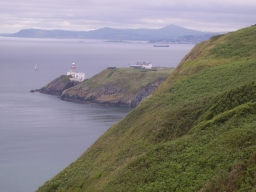
|
Far below we saw colonies of gulls, with some heavy dark birds
of upright shape among them. We argued about what these might be, even
wondering if they could have been penguins, when a man with serious binoculars
came along the path, and told us that they were razorbills or guillemots.
There were also some cormorants, some nesting on the top of a small island
rock. Nearer to us swallows swooped and there were some small brown birds.
|
We turned up the road to the lighthouse, crossed the main road, and by a
lucky chance found the path up through the bracken and brambles. A struggle
brought us out to a lovely heather-covered hilltop. But then Kathy discovered
that she had lost her sunglasses. She had tucked them into her belt on a
water stop just before we left the road. So she went back to look, and
luckily found them.
|
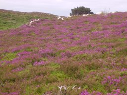
|
Over the top of the hill, with fine views in several directions, and we
ambled down through a very haphazard quarry to the road that took us back
to Howth. Coming down into the town we passed a decent-looking pub, and decided
to go in. We had a merry lunch, with some drink; the girls had chowder and
I took quesadillas. Then we ambled back to the harbour and along the front
to the station.
There were two trains waiting. We flopped into the nearer one, which wasn't
the first to leave, but we were not much delayed. We started taking a more
sensible route back to the bus stop, but at the end of O'Connell Bridge we
saw a number 46A, and ran down the street and tapped on its door. The driver
let us on, so I was back at the hotel by 16:15, in good time for a
leisurely shower before the next event in the programme.
This was the unveiling of a plaque to W. S. Gosset, the chemist, mathematician,
and chief brewer at Guinness, who (writing as "Student") devised the t
distribution. We walked to the campus car park from which conference coaches
went, and a little after seven the coach set off (stopping on the way to
pick up someone who was waiting in the wrong place). We drove to the Guinness
brewery store, an astonishingly huge building which was the hop store and
has been imaginatively converted into a Guinness-themed experience.
We were taken by glass elevator to the top floor, where there is a bar and
small restaurant, given a glass of perfectly-served Guinness, fed by waiters
coming round incessantly with trays of excellent food (unless you happened to
be vegetarian), and had the chance to look at the splendid views of Dublin
in the soft evening light or talk to various friends and colleagues. (The
affair was by invitation only.) Finally, when we really were well fed and
watered, back down in the lifts.
The place where the plaque has been installed was very noisy, so we had the
speeches in a slightly less noisy spot, where the 9000 year lease signed by
Arthur Guinness in the nineteenth century is on display under a glass panel
in the floor. Some speeches were more or less audible over the din of the
experience, but some speakers didn't really feel comfortable with the
microphone. Standing very near. I could more or less hear everything. Then
to the plaque itself, where two members of Gosset's family (one of whom had
met the man, when one was on his death bed and the other a six-month baby)
pulled the cord to show the plaque, and then there were various photo
sessions.
Finally a rumour came around that the coach was about to leave. Some caught it,
while others decided to make their own way home. Of those on the coach, some
decided to get off down town and make a long evening of it; we stayed on.
The coach made various detours to inaccessible hotels. I assumed it would
go to the place it had started from, but it sailed right past, and stopped
at a hotel further along. At this point the driver asked us where we were
staying, and turned the coach around in a narrow side street to take us back
to our hotel. And so to bed.
15 July 2008
|
John was at breakfast when we got there but Kathy wasn't. Rosemary went off
to an early session while I got ready in a leisurely way, then walked up to
the campus and looked at the garden of remembrance (a pleasant little circle
of bamboo and stones with a fountain) and the bust of James Joyce
before heading for the bus stop. The ducks and swans were still at the
feeding point but most of the gulls had already dispersed and the rest were
looking quite satisfied.
|

|
Kathy insisted that a number 10 bus would take us to the Botanic Gardens,
despite assurances from both our and Margaret's hotel desks that it was a
19 or 19A that we wanted. We caught a number 10 into town but she allowed
herself to be persuaded that we should change. The 19 came while we were
walking along the street and took us to very near the gardens. (The 19A
actually stops right outside.)
|
We went in, got maps (all of this free!), and started into the gardens as
the drizzle began, so we decided to do the palm house first. The main door
was closed, but signs pointed us to other entrances (shades of Tara Street
station yesterday). We went in a door with some fine carnivorous plants.
I took a picture, and turned around to find some even more astonishing
epiphytes. As I lined the camera up, the screen whited out and gave me
a pattern of moving lines. It seemed to be completely defunct. So
I had to look at things instead.
|
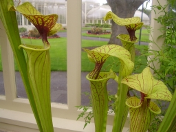
|
There was indeed plenty to see. We walked through that glasshouse, seeing
palms and bananas and a good collection of cacti (some in flower), then
went out into the open. The oaks and Chinese plants were closed, but there
was a nice organic vegetable garden enclosed by old stone and new brick walls.
Some lovely vegetables and herbs, including a golden version of silverbeet,
and an Australian weed of the Datura family in a section of the formal
box herb garden. Naturally, some very healthy looking potatoes!
Outside we came to an exhibition called "Hard Rain", although a sign at
the entrance told us that it was closed. It was an illustrated version of
the lyrics of the Bob Dylan song, and the reason it was closed was that
some of the posters were missing. We found later that a big tree had been
chopped down nearby; it looked as if it might have crashed through the line
of posters. Even without most of the second verse, it was a very powerful
exhibition. The song ran through my head as we walked along. Some of the
lines (like the young child beside the dead pony, a San bushman in a drought
in Namibia) were interpreted very literally, others (the six crooked highways,
a man carrying his cholera-struck wife in Bangladesh) more symbolic. The
white man walking the black dog was shockingly literal, taken inside
Abu Ghraib prison. One of the pictures is the famous Sebastião Salgado
picture of workers in the Serra Pelada goldmine.
We went round further, past waterlilies, pine trees, and another glasshouse
with plants of Gondwanaland, and then round the sunflower maze we'd seen
signs for (not very challenging, as the sunflowers were only thirty
centimetres high), and then adjourned for lunch. The lunch room was crowded,
but the staff were efficient, and we got pleasant salads and found an
empty table.
Then the fire alarm went off, clearly triggered by smoke in the kitchen. We
sat for a while, but it was quite intolerable, and eventually we went out,
leaving our half-finished meals and a coat and hat to mark our places.
Almost as soon as we got out, it started to rain, and then the alarm stopped,
so we went back in, just in time to see a waitress carrying our food away.
A shout brought her back, but she was quite surly. The cashier was more
reasonable, however, and gave us coffee on the house.
Over lunch, Kathy was telling us a story about a mobile phone, whose battery
developed a small fault. A new battery cost 60 euros, but a new phone was
90 euros with 40 euros worth of free calls. As she told it, something clicked
in her brain, and she decided to go back and photograph some of the Hard Rain
posters against a background of trees, and make a collage with a picture of
a mobile phone and battery, to show the consequences of our wasteful way of
living.
That done, we went back outside and caught a bus, which had just arrived at
the stop on the other side of the road and meant we had to hurry. In town
we separated, Kathy and Margaret to the museum of modern art, me to buy
a new camera (illustrating the point yet again).
It was quite a hunt before I found a camera shop, a Dixon's at the back of
a huge shopping arcade. I got another Olympus, so the controls are like
mine and the learning curve will not be so steep. It had better work; the
guarantee is only valid in Ireland. (The salesman didn't try too hard to
sell me the three-year extended guarantee.) On the way out of the shopping
arcade, I found a jeweller selling expensive watches, but she did have a
leather strap for my cheap Casio which she fitted for only twelve euros.
|
And so the bus back to the Montrose, and just time to put a bit of charge
into the battery of the new camera and try it out before the Fisher memorial
lecture and dinner. One great bonus: the old camera refused to talk to the
white toy, and I had to get an adaptor to plug in the card directly; but
the new one works with no problems at all.
I arrived in good time, which was just as well since the room was not
altogether easy to find. I found Rosemary and was able to calm her down
a bit by finding her a drink of water. The session began promptly, but
was shared with the handing out of various prizes, so it was nearly half
an hour before she actually got started.
|
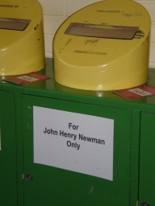
|
|
It was a very good lecture. No surprise to me, having heard about the
material (and even given her access to GAP for the calculations), but the
audience was really impressed. There were several questions, and there was
some difficulty getting away since so many people pressed round to
congratulate her. One of the nice things about the lecture was that the
empirical conclusion from all the calculations could be expressed in a
simple recipe that anyone could understand.
|
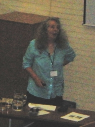
|
Then to the coach point, where a fleet of taxis was assembled. Again, there
were so many people congratulating her that we only managed to get one of the
last taxis. In the taxi was a somewhat under-dressed American girl who had
a complicated technical question which Rosemary was understandably not
processing. When we arrived, this girl signed the chit for the taxi. We were
ushered upstairs and offered drinks; she took a glass of mineral water. (She
had earlier wondered whether she would be out of place, since she didn't
drink alcohol.) It turned out that she thought she was on one of the
Conference excursions, a literary pub crawl, which had left earlier. So she
discreetly slipped away.
At dinner we were seated next to two of the grey eminences, Walter Bodmer
and Geoff Freeman, and their wives. We had a very good evening; the food was
not quick but was excellent, while the drink kept coming. Finally we got to
coffee at about 11, and by common consent the company rose, not even waiting
for the petits fours, and proceeded to the taxis back to the hotels. We
slept very soundly!
16 July 2008
Next morning, Rosemary was off early, to a historical session (which she
very much enjoyed). I had a leisurely start; I went up to the café for
another cup of coffee, bought a paper in the Student Union shop, and did the
hard sudoku while waiting for the excursion to start.
Our coach got the tour guide, who was not universally welcomed! They decided
to go via Dun Laoghaire, along busy twisting roads which the coach had some
difficulty navigating, instead of straight down the main road. I don't enjoy
coach travel in these conditions. Once we got out of Dublin, as always, things
looked up. We went down between the two Sugarloaves, past a narrow cleft in
the hillside, across the moors with flocks of sheep, and down a river valley,
to the carpark of the visitor centre at Glendalough. We (Rosemary, Chris,
Margaret and I) set off on one of the recommended trails, said to be 9km with
380m of ascent (but this didn't include 2km each way to get to the start of
the trail).
|
We started down the Green Road, a well-maintained track, past the famous round
tower and old church of the former monastic settlement, and past the lower
lake. We came to a crossroads near the end of the lake, where we made quite
a steep ascent past a very nice waterfall. At the top, there was a stern
notice warning us that we should have proper equipment including a compass
and navigational skills before attempting this trail. In the event, almost
the entire length of the trail over the hill (The Spink) on the south side
of the lake consisted of large pieces of wood like oversized railway
sleepers laid side by side, across rock and bog, heather and bracken; there
was absolutely no chance of missing the trail, and the only navigational
skill required was the ability to distinguish the three colours of arrows
marking the trails!
|
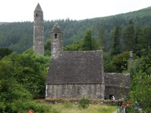
|
We began up a series where the wood had been made into steps, which ascended
quite far until coming out to a viewpoint over the two lakes which give
Glendalough its name. We stopped for lunch there, but soon discovered that
the area was thick with midges, so didn't stop for longer than we needed to!
Then the path continued along the top of the cliffs with views across the lake
in both directions, a final climb to the top of the Spink, and then a descent
which would have been quite unpleasant without the wooden sleepers, across a
large extent of bog.
|
Then down a path of stones laid into the soil to a footbridge over the river,
from where we followed the river down past many beautiful cascades, rapids,
pools, and stunted trees, to the old lead mine and miners' settlement. From
then on we were on the well-made miners' road through scots pine and bracken,
back to the end of the upper lake where we could cross back over to the green
road and back to the coach, arriving ten minutes before the advertised
departure time.
|
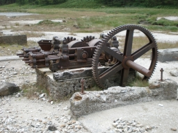
|
The heather flowers were making an excellent show, and there were a few
bilberries just about ripe on the bushes on top of the hill. On the way
down there were bog plants including bog asphodel. Down the rocky river
path we saw many wildflowers including candytuft and a white-flowering
saxifrage. Rosemary, with a group of others, saw fallow deer, and some people
reported seeing feral goats and a peregrine.
Coming back we took a more direct route. The tour guide tried to get us to
sing, without much success, and most of the trip was peaceful. The bus did
hotel drop-offs. We got off with Chris and Margaret and went looking for a
pub marked on the map, getting directions from the tour guide first. We
were rather led astray. We walked almost past the pub, which had changed its
name from the Deer Inn to the Mount Merrion Business Centre(!), and then
across a rather large park, before realising that we needed to ask for
directions. A bemused local pointed us back the way we came, and we eventually
found it.
We had a pleasant evening, with standard pub fare and good beer. When we had
almost finished, the fire alarm went off. If we had been made to evacuate,
I would have taken my food and drink with me after yesterday's experience.
But nobody moved, and the noise soon stopped.
The map showed a fairly short route back to the Montrose, along a path through
the UCD campus, which we took; everything worked fine, and we were soon
tucked up and asleep.
17 July 2008
Again Rosemary was off early; she is talking in the microarray session. I
met Kathy in the lobby at 9:30, we picked up Margaret at her hotel, and
headed off towards Blessington, which was on a lake with hills all around
and a plentiful supply of holy wells, megalithic tombs, standing stones,
etc. I had identified a likely-looking place for a walk.
We had a coffee in the town's only coffee shop (though it was plentifully
supplied with pubs), which produced attractive-looking bread and delicious
fruit scones. Then we found a big sign for the tourist office. The office
itself was more elusive, tucked round the corner at the end of a row of
shops accessible by a slightly rickety staircase.
|
The woman in the shop seemed appalled that we were prepared to walk, but
when we persisted she offered us the Glendalough leaflet that we had used
yesterday. There was another leaflet, for a walk round Hollywood (St Kevin's
old stamping ground, with his bed and chair marked on the map). So we
changed our plans and headed down the road to Hollywood.
Out of town, past the protestant church, up a grassy crag to where St Kevin
stood on a crag. A true Irish miracle: the statue had been erected in 1914,
and the leaflet described it as "headless", but it was entirely intact with
no sign of a join! Soon after, we came to a closed gate with a notice saying
"Danger: no entry", and although we persevered for a while we were forced
to turn back. We discovered that the map had been produced in 1991.
|

|
Undaunted, we went out by the way we were supposed to come back, and did the
rest of the circuit mostly without difficulty. There was a narrow winding road
along the skirt of the mountain, with lots of gorse, foxgloves, and brambles.
Then we passed some houses and farms. At one farm, two little dogs came and
tried their best to see us off. Inside the farmyard a peacock was preening
itself in a mirror. The stream had a wooden pallet on the bank; we managed
to use it as a makeshift bridge, but I had to get my feet a bit wet putting
it back on the bank. Then there was a nice stretch through pine forest.
The map offered us a short detour to a stone circle, the Piper's Stones,
down a lane to a house. But the builders working at the house denied all
knowledge of it, and claimed that we should try to get to it from the main
road. We declined, and went on our way.
|
Back in Hollywood, we went to the Hollywood Inn, where we had a pleasant lunch
of leek and potato soup (in my case) and toasted sandwiches, and a nice
pint of Smithwick's (or half of cider, or fizzy mineral water) before hitting
the road for home. The village had two pubs on either side of a wide road
leading nowhere; I supposed that they had been coaching inns and that this
had once been the main road.
An easy journey home (most of the traffic was going out of Dublin), back to
the hotel about four, with plenty of time to prepare for dinner.
|
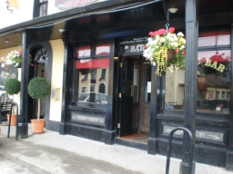
|
On the way out to dinner we met John Hinde, who said that it began at 7:30,
not 7 as it said in the programme. Indeed, the tickets did say 7:30, but we
ambled over anyway, and inevitably found quite a few people there. They opened
the front door and we went into the foyer, and though the staff kept telling
us that we were too early, nobody went away. After a while they bowed to the
inevitable and brought some drinks, and finally let us through into the
conservatory.
Eventually the doors to the dining hall were opened and the event began. It
was a so-so meal -- the steak was very tough -- but the wine flowed and the
company was good, and the Irish singing group who entertained us did some
remarkable things (slightly detracted from by people behind us who kept
talking in a low voice). One particular piece, with English words and an
Irish melody, sung in Hebridean style called "not singing together", was
quite astonishingly beautiful and controlled.
And so home, rather late.
18 July 2008
So getting up for breakfast was a bit of a struggle. Rosemary had an 8:30
start again; I read a bit before venturing forth. The relentlessly grey
skies continue, and there was quite a heavy shower at breakfast time.
I made it down to the hotel lobby, where I wrote my Lisbon talk and edited
a few files. The morning passed relatively slowly, and it was nearly 1:30
that Rosemary got back, the closing ceremony having been rather long. The
white toy was playing up; every time I started a program or opened a
terminal window, I got a bizarre error message about inter-process
communication, whose only practical effect appeared to be that the double
quote and at sign had changed places on the keyboard. This may be caused
by my having used GIMP, which complained about not enough memory; it may
have overwritten some crucial file somewhere.
We took the bus into town. It was already packed when it arrived, and the
young people upstairs were very noisy. Eventually the driver decided that
the bus was full and sailed past bus stops with big queues of people
frantically signalling to him. Eventually we reached town, and had soup
and salad in a small bistro.
We went to Tara Street station to catch the DART to Malahide. There was again
some delay, since two trains to Howth and one to Maynooth (and one which
didn't stop) came before ours. When the train came, it went rather slowly.
So it was well after 4 by the time we got to Malahide.
|
We walked into the Demesne (a helpful man who had been on the train pointed
out the best way) and found our way to the Talbot botanic gardens. We paid to
go in, although by then we had only 35 minutes until the gardens closed. They
were well worthwhile, with some quite astonishing flowers; I went slightly
berserk with the new camera and took lots of close-ups. We wandered around
the whole thing, and had time to linger at the most interesting specimens
and even to sit on a seat for a few minutes at the end before the caretaker
came to eject us at 5.
|
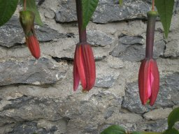
|
|
Then we wandered gently around the demesne, through nice stands of trees,
looking at the well and the ruined lime kiln and doing a few of the
exercises on the fitness trail. We left the demesne by a gate on the north
side and found a lane that took us down to the water. Not a very exciting
bit of shore, but a nice view of the railway crossing the water. Then through
a tunnel to the Malahide seafront, where we strolled past the yachts and
checked out the restaurants, opting eventually for the Orangerie, a
Cajun/Californian restaurant.
I had Brie in crumbs followed by Cajun chicken, both extremely flavourful and
very nicely presented. We managed a glass of rosé each, no more
being necessary after last night. Finally, we went back to the station and
caught train and bus back to the Montrose. The midge bites were itching so
we applied tea tree cream and then slept very well.
|
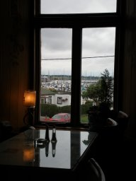
|
19 July 2008
Quite tired in the morning; up at the usual time for breakfast since we had
to catch the airport bus at 9. Checkout was quick, the bus came soon after
we arrived at the stop, and though the trip through the city was a bit
stop-start, we were at the airport in good time. The check-in queue was
blessedly short. But the airport security was a shambles. The sensitivity of
the metal detector was set far too high; everyone set it off. The only metal
on me was the eyelets on my shoes, but they set off the beeper, and I was
hauled over for a body search. It was perfunctory, the man doing it looking
rather stressed, and he didn't even notice my shoes. Then I found that they
had taken my belt, and I had to ask them for it. Later I found that they had
disconnected the SD chip from the white toy. It could so easily
have become lost. I had a horrific vision of losing all my talks, pictures,
diaries, etc.
Finally we were through, into a departure lounge looking more like a souk.
The departing passengers were crammed into a narrow passageway between rows
of identical shops. Fortunately we spotted a sign to a food court; this was
less crowded, and had nice fresh salmon and salad and huge quantities of
watermelon and pineapple quite cheaply. So we were able to relax a bit until
the departure gate opened.
Not surprisingly, there was some delay at the gate, and some confusion --
a flight to Rome was leaving through the same gate and about the same time
as ours. Finally we got on to the plane; we got two seats together, and I
had the window seat. The views were stunning. Some cloud, but enough gaps
to see what was beneath. The water in the Irish Sea was patterned by currents
and cloud shadows. Then not much to see until I saw Chesil Beach and Portland
Bill out the (right-hand) window. We flew out to sea, and just caught a
glimpse of the southernmost tip of the Isle of Wight, but returned to the
coast at Selsey Bill and flew down to Brighton before turning inland.
Turning to land at Gatwick we could see the North Downs rising before us
and London beyond, with the Dome and Wembley Stadium both easily recognisable.
A small surprise at immigration. After I had made a long detour following
signs for non-EU passports, I came back to the same place as everyone else,
and was told that Dublin passengers should join a different queue, and
should have their boarding passes ready. Fortunately I hadn't thrown mine
away; a woman collected them and we were through, no passport inspection
required. The bags came quickly and we were soon home.
A quick trip to the Co-Op stocked us up on the essentials for dinner and
breakfast; in particular, offsetting the extraordinary lack of fresh fruit
and vegetables in Ireland.
I had a go at fixing the problem on the white toy, and ended up
fixing it so that it wouldn't boot. After a little thought, it seemed to me
that this problem would just recur, since I had not enough memory left after
installing various software; so I reset it to the factory settings. All the
files were safe, since I had them on the SD card and had also backed them
up to a USB stick. Then I went into the office and, after reading a lot of
email and dealing with a small bit of it, I looked up on the web a couple of
useful hacks that I had before (to get a reasonable-sized terminal window,
and to ignore a USB device or SD card on booting up) and put them in.
Home to supper, bath and bed.
20 July 2008
So much more relaxing to sleep in my own bed!
After breakfast I went back to the salt mines to deal with a couple of
urgent emails. Then back home, stopping off at the Co-Op to get a bit more
food for lunch -- tomatoes, a pepper, and some salami. We made a good lunch
of this with the rest of the bread, cheese and fruit, after a rather hurried
packing in which I forgot my hat!
I took Rosemary to Kings Cross and put her on the train to Cambridge, then
caught the Piccadilly Line to Heathrow. The platforms and trains at Kings
Cross were terribly crowded, but by going to the end away from the entrance
I was able to find a seat to myself, and to have a good choice of seats when
the train came in.
Having plenty of time, I decided to
have a look at the new Terminal 5. It is quite a nice building, but looking
a bit unfinished in some places, held together with string and tape. But it
is cool (presumably at great cost in energy), uncrowded, and clean. I walked
up the stairs from arrivals to departures, with dramatic views over the
tree-studded courtyard, the car park with a couple having a quick snog on
the roof, the curving elevated road and the view beyond to the reservoirs,
fields and hills. Then I read for a while in the cool before heading back
to the hurly-burly of Terminal 2.
One quibble: the noise level on the new track to Terminal 5 is unbearably
high.
I bought a guide to Lisbon and headed back to the underground.
On entering Terminal 2, I at once saw why Terminal 5 is so much more
pleasant: the high ceilings. It felt very oppressive. I was too early to
check in, so went and sat in the departure lounge for a little while.
This was a mistake: when I came back downstairs, there was a very long and
almost immobile queue, served by a single desk. After a while, two adjacent
desks gave intermittent help, and after 25 minutes I was checked in, and
another ten minutes got me to the departure lounge.
Just about the time we should have been called to the gate, the screens
announced a delay of more than two hours. I decided it best to have something
to eat, so went to Wetherspoons for dinner. I also decided that the delay
would mean I'd be likely to run out of reading matter, so I went to Smiths
and bought a book.
Finally we were called, boarded, and set off. The plane sat for a long
time on the tarmac, where a lovely sunset was colouring a cloud in the east,
out of which the lights of planes appeared at regular intervals to run
down the flight path. We finally took off nearly three hours late. But
the flight was stunning. The sun was setting, and as we rose through the
clouds their towers (and the wings of the plane as it banked) were lit with
a bright orange light. We came to the coast, with good views of Hayling
Island and Portsmouth with its giant sail, and an absolutely stunning
view of the entire Isle of Wight -- hard to think that it took more than
four days to walk round it, but everything was clear, the hilly backbone,
the rivers, the Needles, even the coloured sands of Alum Bay. Out over
the Channel, with views of the Channel Islands and Normandy, and a remarkable
red-orange band between two different shades of blue-grey in the sky.
Darkness came, they fed us, and finally we were over Lisbon. We flew out over
the Tagus estuary and turned back, with fine views of many magnificent
buildings in the town, and then some rather ugly buildings, all illuminated
by a moon just past full that had risen in the sky.
Off the plane, I saved a bit of time by having a non-EU passport, and so
avoiding the queue; but the baggage was absurdly slow in coming, so it didn't
make the slightest bit of difference in the end. Finally all was done, and I
came out the gate to an enormous crowd of people, with João among them.
He took me on a quick night-time tour of Lisbon, including some of the
buildings I had seen from the plane, and filled me in with some history.
It was nearly 1 when I finally got to the hotel.
21 July 2008
I woke in time for a bath and breakfast before João came to collect me.
Unlike Dublin, there is fresh fruit, cold sausage and cheese, and even
the hot breakfast is quite light, with nothing fried.
We arrived at the conference venue and got a bag with programme etc. I also
met Christopher Minder from Switzerland, who is talking on using designs
in eliciting expert opinions in clinical diagnosis; someone had told him
that Hadamard matrices would help him, so he had googled, and found my
article in the Encyclopaedia of Design Theory; he regards me as the expert
on this topic.
The workshop is in the Communication Museum. It began with a formal opening
ceremony, and then a eulogy for Professor Caliński (whose eightieth
birthday we are celebrating) by a colleague and former student of his. Then he
gave a lecture, using PowerPoint, but with an assistant to click to the next
slide; it was marred a bit by the fact that he mostly just read out the
content of each slide, and even showed us the place with a laser pointer
so we could follow more easily.
I must admit that I drifted off into thinking about expansive permutation
groups (or whatever our current term for them is). I was able to show that
the general linear group acting on subspaces of fixed dimension, and any
classical group, is non-expansive in every case where it is not 2-transitive.
After lunch, in a similar talk, I did the same for the symmetric group acting
on subsets of fixed size. I found later from João that Peter Neumann had
already done this last week and circulated an email about it.
After the coffee break João took me to his institute, where I will have a
shared office this week. I got the office key, and will get a computer
account later. We also talked to Csaba, and went for lunch in the canteen,
where we had a dish from "the other side of the river", consisting of meat
and mussels (so the Portuguese invented surf'n'turf before the North
Americans!).
|
Outside the institute there are some splendid oleanders in full flower,
and also palm trees, a loquat, and other sub-tropical vegetation. The
sun poured down, and the jets coming in to land thundered overhead. (João
says this is the only inner-city major airport in a European capital. Two
plans to build one out of town have been blocked, in the first case on
environmental grounds since it would have involved moving a mountain and
blocking two rivers, and in the other it would be 50km from the city.)
|

|
In the afternoon break we also skipped out and went back to the institute,
where I got a computer account, caught up on some of the synchronizing
email, and then walked the short distance back to the hotel.
João came to pick me up and take me to dinner. We went by yet a different
way through this beguiling city, over two hills, through narrow streets in the
old Moorish quarter which had not been destroyed by the 1755 earthquake, past
the castle and the cathedral. At one point the cityscape opened out to give a
fine view of old houses further along and the broad Tagus beyond. The
extraordinary Lisbon light illuminated houses of the characteristic Lisbon
yellow. I do want to find my way back there on foot at some point!
|
Arriving in a small square, we parked the car and walked the short distance
to the restaurant Luso, in a side street. We were the first there, so waited
outside for the rest of the party. Eventually we were ushered in and sat at
a long table near the stage. I was with João and Csaba, with Theresa
next, and Basia's supervisor Stanislaw Mejza beyond her.
The dinner was plain but tasty: thick vegetable soup, fish with prawns, and
a delicious caramel-flavoured dessert. While we ate, the entertainers
performed on the stage. Two groups alternated: the folk dancers (who each
time wore different costumes and performed dances from different parts of
the country, once the north, once the village from which the bullfighters
come, etc.), with castanets or tap shoes, accompanied by accordion and drum;
and the fado group (four different singers accompanied by a Portuguese guitar,
regular guitar playing chords, and bass).
|

|
The Portuguese guitar is a kind of overgrown mandolin with twelve strings in
six pairs, and the player was excellent, using it very effectively to
support the singer, and doing very impressive solos as well.
Finally the owner of the restaurant came on and sang a few songs, during the
last one duetting with one of the other singers standing in the audience. I
thought this would be all, but the dancers came on and involved some picked
members of the audience in a dance for the sardine festival, and then all
the entertainers came out and took a bow.
That was it, and João drove me back to the hotel.
22 July 2008
I could sleep in rather later this morning since we had agreed to meet in
the Institute; I took a shower, had breakfast, and then typed up the proofs
of the non-expansive results I proved yesterday, before walking the relatively
short distance to the Institute.
The computer in my office was no longer working, but João allowed me to
use one in his office. On the Windows machine there were at least two different
ssh programs but no scp. One of the ssh windows
allowed "copy and paste" (though the other didn't), so I opened the file
locally, copied it, and pasted it into a file in London, which I then
compiled and circulated to the mailing list (not even proof-read!!)
Then off for more sightseeing -- João drove out to a beach west of the
city, just about at the point where river becomes sea. On the way, we had an
adventure. João stopped for petrol at a service station. (The car, I
should say, is a hired car, since his sister has borrowed his big car and some
of his children for a holiday!) When he came to put the petrol in, he found a
metal cylinder blocking the fuel tank inlet, and nothing would go in. He
asked the service station attendant, and a man in a similar make of car who
had just pulled up, and telephoned the hire car company, all to no avail.
Meanwhile, I took a look myself, stuck in a finger, got my nail under the
metal disc, and lifted it up. Then it was a simple matter to hold it up
with a biro and slide the nozzle in underneath.
When we got to our destination, it was a bit difficult getting to the beach;
all the roads seemed to turn the wrong way, and we drove around a shopping
centre, a housing estate, and a riverside park with some splendid eucalypts
(twice) before finding a road which led along the beach. Rather than stop
and paddle, we had to head back to the conference along a riverside road,
and were just in time for the first invited talk.
The third talk of the morning was about the connection between Jordan algebras
and statistics, specifically their role in best linear or quadratic unbiased
estimators; interesting stuff (essentially a coordinate-free approach) but
I didn't get everything out of the talk that I could have; I might have to
look it up later.
For lunch we had the Portuguese speciality, bacalhau (salt cod),
which João had told me about: he says that his German brother-in-law
cannot stand the dish, but I found it to be delicious, and went back for second
helpings. Afterwards there was fresh fruit: mangoes, pawpaws, kiwifruit, etc.
All very good.
I was second speaker after lunch, with Csaba following me and João
chairing the session. Before the talks, Csaba and I looked at one another's
slides to see whether our talks needed to be modified, and decided that
basically a little repetition was probably a good thing. The first talk was
interesting stuff about how a change in the model has given new hope to the
Gates Foundation's campaign to eradicate malaria.
My talk was a bit off-topic for most of the audience but seemed to go down
well anyway. There was no board of any kind, but four bottles of mineral
water stood on the table where the important people at the opening ceremony
had sat, so on the spur of the moment I used them to explain the wreath
product: the independent Brownian motions of the molecules in the bottles
comprise the base group, while the top group involves moving the bottles
around. The same metaphor explained synchronization quite well.
After the talk I was presented with a goody-bag of gifts: a pen, some
blue and white Portuguese crocks, and a couple of coffee-table books.
A very sweet gesture; I tried out the pen by writing "Thank you!!" to
Theresa.
Over tea there was a poster session; one of the posters, I was amused to
see, used the "Franklin--Bailey algorithm" to find fractional factorial
designs. There were then three contributed talks; the first two relatively
standard applications talks, the third one about updating web pages which
horrified me (he proposes making them synchronous so that you can chat,
with voice synthesis, in real time -- I can think of few things worse!).
So there was a short closing ceremony and it was over. João of course
suggested a drive. We went out to the large artificial forest on the hills
west of the town. At one point, we broke with tradition and got out of the car
for a short walk to a viewpoint with nice views over the city and the
suspension bridge. Since I seemed to survive this OK, João took me to a
restaurant with a landscaped pool and garden, and then to a part of the forest
with an amphitheatre and exercise trails, and we did some more walking.
|
From the last point, we could see the suspension bridge, and João
suggested that we cross it, since the rush hour traffic seemed to have abated
somewhat. So we did, and on the other side we drove through the suburb of
Almada, full of dodgy-looking high-rise buildings (João says they cost a
quarter the price of houses on the other side) to the Santuário do
Cristo Rei, with a version of the giant Brazilian Christ figure on top of a
column.
|
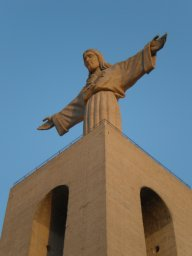
|
Here we had an extraordinary adventure, an example of the law of conservation
of luck. We found the gates locked, which João says must have been a
recent change since he had never seen that before. There was another man
trying to get in. João addressed him in Portuguese; he answered in English
with a Dutch accent. He had lost his money bag, and thinks that he left it
in the restaurant in the park. He was quite perturbed to find that he
couldn't get in. João found a call button and pressed it. Eventually
a man carrying what looked like
leads for very fierce dogs came over. We explained the problem to him.
He went away and looked, with someone else helping him, and eventually came
back and told the man that they had not found it, and that he should come
back at 9 o'clock the next morning to see whether the management found it
and put it in a safe place. So he went away disappointed and caught a bus
which had just arrived. Meanwhile, João engaged the man in conversation.
I don't know what he told him about me; I suspect something along the lines
of "This world-famous scientist has come all the way from Australia ..."
Anyway, the man said that the overseer was away and he couldn't really let
us in without permission, but he would give us a ten-minute guided tour!
|
As we walked in, there was the most astonishing sunset, with the sun behind
a cloud over Sintra and shooting out rays in all directions. The last rays
were illuminating the giant Christ, and on the other side of the river
the slightly hazy old city lay. On the way out, we passed two very fierce
dogs (no doubt the occupants of the leashes the man still carried), an
Alsatian and a Portuguese sheepdog, which barked loudly at us, especially the
Portuguese.
|
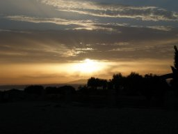
|
Back to the car, and back over the bridge, the sunset now even more amazing
in rich shades of orange, but no chance to stop for a photo! So back to the
hotel for the night.
23 July 2008
Another leisurely start; this time, nowhere special to go. I walked in to
the department. João wasn't there, Csaba was busy, and the computer was
still not working, so I went and started writing some notes updating the
synchronizing paper on the white toy. After a while João
came by to collect me for the bureaucratic business, i.e. signing some
forms, collecting the cheque, and taking it to the bank. We talked a bit
about Pablo's G2(2) example, and Csaba checked that the
stabiliser of the 21-set is PSL(3,2):2. I decided that it must have something
to do with the embedded thin hexagon, and soon realised that it couldn't
just be the point set. But on the way to the bank I understood what is
happening: each of the 21 points of the sub-hexagon lies on three lines,
two of which are in the sub-hexagon, so the third meets it in just one
point; these 21 lines, together with the three lines through a point,
demonstrate that the group acting on lines of the hexagon is non-separating.
(The spread of lines, together with the 21 points of the sub-hexagon,
demonstrate that the action on points is non-synchronizing.)
In the meantime, Csaba had brought a very long network cable, and I was
able to connect to the network; no login required, everything worked
absolutely flawlessly (both Web browser and ssh). So I was able to
ship both the synchronizing notes and the notes on Pablo's example to
London, compile them, and circulate them; and I also corrected the proofs
of my paper for the Hilton volume of Discrete Mathematics.
João came. I gave him a Kantor reference and we went to lunch. I had
some very tasty fish. After lunch, Csaba came to coffee, as did Gracinda,
the director
of the Institute; we had a long and friendly chat before she went off to
do some bureaucracy, Csaba to sort out a problem (his bicycle was stolen
last night from the balcony of his apartment, and he is worried because the
door from the kitchen onto the balcony cannot be locked). I worked a little
longer before setting off to walk into town.
|
It was hotter than of late, the sky cloudless and the sun strong; I missed
my hat. But it was a stunning walk, which I tried to record with far too
many photos. I headed towards town, crossing the railway line and coming to
the back of the Calouste Gulbenkian Gallery, set in superb gardens. Finding
a gate at last, I went in, and walked round to the front. I had had half a
mind to head for the Edward VII Gardens, but the roads thought otherwise,
and I found myself passing the Pombal statue and down the Avenida da
Liberdade, the busy street running between cobbled walkways with many
lovely trees.
|
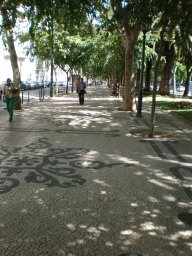
|
|
At the bottom, I went up some very steep steps, aiming for the castle. I
found myself skirting a hospital, with the castle on the next hill over,
so there was another downhill and then up some more steep steps and narrow
streets. Eventually I found my way to the castle entrance. Deciding not to pay
to go in, I walked round the walls, with glimpses of the Tagus down the
side streets. I went down one of these streets, and came to one of the places
João had taken me, where we saw the "Lisbon light" on the houses further
down. There was a church with a little yard containing some brilliant
bougainvillea and a blue painting on ceramic.
|

|
The smells in the first part of the walk were quite extraordinary. Fried
fish, drains, and at one point a mixture of chocolate and petrol fumes; and
something else that seems quite characteristic but I failed to identify.
Down from the castle I came to the Praça do Comércia, a huge
square with an elaborate statue in the middle and Lisbon yellow government
buildings round the outside. I kept on west, not on the busy road but a
bit in, and after a while turned up the hill.
By this time I was a bit tired and dehydrated, so I stopped in a café
for coffee and cake and a bottle of water. It was getting cooler, and I set
out again much refreshed.
Further up I recognised a church, which according to João contains a
large amount of Brazilian gold. He told me this on the night of the
conference dinner, so I turned down the side street and there was the
restaurant. Back to the road, a short distance brought me to a little park
with a stunning view, looking across the valley to the castle.
|
I continued along the street, aiming for the aqueduct, with some vague hope
that it might be possible to walk across it. After a while I came to what
seemed to be a detached piece of the aqueduct, the arches leading into a
pleasant small park. In one of the aqueduct supports was a small Fatima
chapel, and on the others were blue and white ceramic pictures.
Finally, after being barked at by some very large dogs in very small front
gardens, I came to the aqueduct -- and of course there was no way across:
there were footways on either side, but the whole thing was behind securely
locked gates and barbed wire. So I looked at it from both sides, and set
out for home.
|
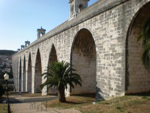
|
The map showed a fairly direct road, but it turned out to be a busy
expressway. So I headed along a different road. On the way I passed a
small but pleasant-looking café and decided that I might as well
eat there as anywhere. The solitary but good-natured waiter brought me
a little dish of beans and peanuts in their shells, and two bread rolls,
with my beer while they cooked my dinner. The television was showing an
ice-hockey match between Portugal and Switzerland, which Portugal won.
I finished the meal with a coffee and set off.
By this time the sun was getting low. It was by no means as spectacular a
sunset as yesterday, with no clouds in the sky; but the light, striking
down streets from the west, was a delight. I eventually came back to the
back of the Gulbenkian Gallery, and retraced my steps back to the hotel.
I was fairly tired and very thirsty, so drank several glasses of water and
had a relaxing bath before bedtime.
24 July 2008
I came in to work early enough to read my email before the 10am meeting we'd
scheduled to discuss the proposed "brainstorming" session. I checked the
spam file and found an invitation to a conference on geometric and asymptotic
group theory -- the spam filter had probably caught it because over 90%
of the message consisted of email addresses. I don't think I shall go to it
but I put it on the conference list, and moved the July conferences to the
archive. Then I looked at the Astronomy Picture of the Day and the BBC news.
When Csaba and João arrived, we spent over an hour brainstorming about
the proposed small conference or "brainstorming meeting" next summer. We
decided on tentative dates (after the BCC, and after a big semigroups
conference in Porto where several interested people will be), list of invitees,
and which of us will do which jobs. I got on with writing some of the
documentation before lunch (the 50-70 word abstract), and in the afternoon
made a start on the scientific summary and my CV and five relevant papers.
Csaba continued with PSL(2,13).
At 5pm I decided to stop for the day, returned my key and the network cable
for the white toy to Csaba, and came back to the hotel for a shower.
João said he would collect me at 8. I waited downstairs where the
chairs are more comfortable. In fact he came at 8:30; as he said, nothing
went wrong, otherwise it would have been much later.
We drove to his house, where Csaba with his lady and two small children,
and Gracinda and her husband, had already arrived, and also João's
wife and (I am afraid to say) an indeterminate number of children, two of
whom helped entertain us before dinner.
We had a very fine dinner: bacalhau in a potato pie with tomato and
olive salad; then meat, rice, and tomato, kiwifruit and mango salad;
and finally an amazing chocolate concoction and a strawberry and pineapple
cake. We talked a lot about how Bologna affects us (most continental
Europeans blame it on the British; and are just a little surprised when I say
how little attention we pay to it), students' attitudes, and in general the
sort of things that academics make conversation about when they are avoiding
talking shop. After dinner Gracinda's husband drove me back to the hotel.
25 July 2008
In the morning I was awoken before six by a lot of noise in the street below.
(I had left the window open, preferring fresh air to the rather inefficient
air conditioning.) Looking out of the window, I was surprised to see that
it had rained in the night, and the day had brought low cloud and drizzle.
(João said that Lisbon was weeping that I was leaving; more likely,
I think, that it was re-acclimatising me for British weather, for which
the forecast is not promising.)
I had an early breakfast, packed, and was downstairs at 8. I had told
João that I'd like to be at the airport by 8:30; he had jokingly said
he would arrive at 8:28, and in fact he was held up and arrived exactly at
that time. But it is only a ten-minute drive to the airport, we were going
in the opposite direction to the rush-hour traffic, so I was there an hour
and a half before departure. João pressed on me a parting gift of the
delicious Lisbon custard tarts, and suggested that Neill should develop a
twenty-first century Popeye who gets strength from these cakes.
The first steps were very easy: check in was very fast (they didn't even
ask me whether anyone had given me anything), and security likewise. You
never can tell where the bottlenecks will be, though. It took me fifteen
minutes to get through passport control, even though EU passports had a
separate area. All they did was ask me if I was going to Dublin and then
stamp my passport. There were several further long waits: after the gate,
in the ramp (open to airport fumes) waiting for a bus; on the bus, waiting
for a driver, and again, waiting for aircraft cabin crew. We finally left
about half an hour late.
With the change in the weather, the direction of take-off was reversed, so
we flew over my hotel (though I didn't see it, as I was on the wrong side).
Occasional glimpses of the Tagus, then solid cloud until northern Spain,
where there were a few breaks. It was cloudy over England and France, but
the Channel was mostly clear, and again I had fine views of the Channel
Islands.
Approaching Heathrow, the clouds conjured up a marvellous landscape. Beyond
a line of sandhills stretched a blue tropical ocean, with a wave rolling
in to the shore, an island, and hills on the other side of the bay with two
shiny white hotels built on them. Then we turned and descended into the clouds,
and never reached this ideal land; when we emerged we were over the south
London tower blocks, with the Dome (or the oh-two, as we are supposed to
call it now) in the background.
Only a little late at Heathrow, such is the wonder of timetables, and a fairly
quick trip through the airport to the underground, where a train came almost
immediately. London was hot and humid; broom and buddleia were blooming along
the Piccadilly Line. Quite soon I was home.
I walked to Whitechapel, took the photos in for printing, and collected the
parcel from the sorting office. Then I went home, had a cup of tea, and did
a load of laundry. I packed for Cambridge, and walked back to Whitechapel
to collect the photos. Then (why not?) I walked up to the canal and along it
to Kings Cross.
The station was terribly crowded and I had to queue for quite a long time for
a ticket. Then the Cambridge train was standing room only, so I had a bite
to eat and caught the slow train. It was crowded at first, but fairly soon
the crowd thinned out and it became more or less pleasant, which the fast
train would not have been at any stage.
In Cambridge, the sun was about to set, and the evening was very pleasant.
Parker's Piece was full of people, mostly just sitting talking but a few
playing football. Town was full of people going to pubs and clubs. I got
to Storey's Way but had a bit of trouble finding Benian's Court, which
is off another street called The Crescent with a sign suggesting that it
belongs to St John's. Also, the main block starts at number 7. But I found
the place eventually.
26 July 2008
After a very leisurely start we set out to have a gentle stroll to
Grantchester and back. We stopped in the Newton Institute on the way and
saw a lot of statisticians and mathematicians: Dave Woods, Basia and Anthony,
Ilya. On the path to Grantchester we met a Flemish couple and their small
child, here for the meeting.
We went into the first pub in Grantchester, expecting that it would be full
and we might have to move on. But it was surprisingly empty for a fine and
hot (though humid) Saturday afternoon, so we ordered food and drink and went
into the garden. There were Chris and Margaret already installed at a table,
so we joined them.
Over lunch we discussed possible walks, and I suggested the walk to Barton
and across the rifle range to Coton. They accepted, and then Rosemary decided
that she was up for it too, so after we had finished we all set out on the
walk.
It was a very warm and humid day, mostly sunny. There were wildflowers in
abundance. At one point I saw more scarlet pimpernel than I ever saw in
one place before, all wide open (which is supposed to be a sign of good
weather). There were also blue flowers (scabious, and the one that grows on
tall stems), white flowers (daisies, mayweed), purple flowers (bugle, mallow),
and masses of yellow flowers (ragwort, the umbellifer that isn't fennel,
etc.)
The rifle range was deserted and we carried on, and followed a path through
the Coton conservation area which avoided a bit of road, and up to the
village recreation area. By common consent, we turned left and had a couple
of pints in the pub before heading home.
27 July 2008
We walked out to have Sunday lunch with Robin and Catherine. Setting off
through the suburban streets of Cambridge was fine, but when we came to the
point where we had to cross the disused railway line and go under the bypass
(according to the map), we found that the railway was being converted into a
guided bus route, with no access, and the land beyond was being turned into
the Cambridge Regional College (slightly redeemed by some lovely waterlilies).
Misleading signs pointed us in quite the wrong direction, and it was quite
a while until we found our way under the bypass and onto the old Roman road.
The first part was absolutely disgusting, being used mostly as a rubbish tip.
But when we got past this, suddenly it became a delightful green lane, with
trees on either side shading us (it was already very hot and humid), lots
of summer wildflowers, and rabbits playing tag. Later we passed greenhouses
with raspberries (growing in the ground) and strawberries (in pots on tables).
The Roman road brought us to Landbeach, a pleasant village with a very nice
recreation ground, where we stopped for a short rest. Then the ordeal began.
The road from Landbeach to Cottenham is very busy, not really wide enough for
two lanes, and with absolutely no footpath; the day was by now very hot,
but there was nothing for it but to press on until we reached Cottenham.
In the village, we were accosted by an old man in a dark serge uniform
(maybe Salvation Army) who really needed to talk to someone; his
conversation was not at all self-centred, he wanted to know all about us,
why Rosemary had a bandage on her knee, etc., but it was difficult to tear
ourselves away. Finally we did, and arrived at Dunstal Field only fifteen
minutes late.
We had a very relaxed afternoon, beginning with champagne (to celebrate
nothing in particular), then very tasty chicken and rice, and Vienetta (a
blast from the past) with fresh strawberries. We met young Edward for the
first time -- a little chap with a very sunny disposition and very curly
hair -- and had a good time with the older children, including a game of
outdoor chess with Charlie. Finally it was time to go, and we went out
to wait for the bus, which was only a little late.
The bus brought us to just above the Castle, We walked down the hill and
climbed the Castle mound (some very fine mistletoe on the trees), then
went to the pub looking for a drink; but the pub was shut, so we went to
the County Arms across the road. Then back to Benian's Court to pick up
my clothes, and back to the Castle (open by this time) to eat.
As we walked over, it was much cooler and we could see the clouds building
up. We debated whether to sit outdoors, and decided to risk it. But we had
only been sitting for a few seconds when the rain started, and what a
downpour it was. We moved under cover, but eventually had to move further
in because of the splashing. Our bacon baps got a bit soggy coming out through
the rain, even though it had got much lighter by then. We ate slowly, and
by the time we had finished the rain had diminished to a light drizzle.
I walked to the station through the cooling drizzle. On the way, I looked at
the timetable and discovered that the two trains an hour on Sundays are only
thirteen minutes apart, and I had comprehensively missed both of them. So I
decided to do some food shopping at Marks and Spencer while I waited. But
when I got to the station, the display screens were blank, the gates open,
and M&S closed and dark with a notice on the door saying that they had
been forced to close by the power cut and wouldn't re-open until power was
restored. I went through and found that the slow train to Kings Cross was just
about to depart, so I jumped on (though waiting might have saved a few
minutes).
At Kings Cross, the Whistle Stop was open, so I got a few basics, not very
good and rather expensive. Too late I noticed a Marks and Spencer next door.
But that was enough. The Hammersmith & City Line was not running, so I
took the Northern Line and changed at Bank (despite their assurances, there
is no difficulty at all in changing at Bank!), and so home and to bed.
12 September
On Friday, I left work a bit early and went to Oxford Street to buy Logan
a birthday present. I decided to play safe and went to John Lewis, finding
that they have a small toy department. They even had some nice wooden toys:
I found a drum that makes a variety of different sounds, but eventually
decided to buy him a shape sorter. Lex will get the drum, I think. (Had I
had any sense, I would have bought it too and saved myself a journey.)
After I got home, Hester phoned from Waterloo Bridge to arrange a time to
meet the next day at Paddington.
13 September
On Saturday morning I woke early but had nowhere near enough time to make much
start on tidying the house before it was time to set off. I arrived at
Paddington good and early, and bought a ticket. To my surprise the ticket
seller told me that it was cheaper to get a return from Paddington than from
the edge of the zones. Hester showed up with a bit over ten minutes to go,
having had a fraught trip (the Victoria Line not working), and proceeded to
panic while Bob bought the tickets. But we got onto the train in plenty of
time, and it was an HST with a buffet car, so she needn't have panicked.
After an uneventful trip, we walked to the Castle, where Marie was waiting.
We had lunch in a sort of world food/hamburger/sandwich bar, which was not
too bad, except that their ginger beer was Sch..., artificially sweetened,
and tasted disgusting. But my lunch, an Asian prawn wrap, was tolerable.
After lunch Hester and I went to Sainsburys to get some flowers
and some wine and beer for the party. Then we made our way out on the bus.
The bus stop had moved round the corner because of roadworks but (unlike
Cambridge) they had a helpful map to direct us to the right place, in front
of St Mary's church.
The bus came very soon and took us out to the Slade, from which it was only
a few minutes' walk to Neill's house, where the party was already under way.
|
It was a real gathering of the clans,
both Neill's and Di's clans, together with Kenny and Emma who are godparents
(or whatever the equivalent is for atheists). It has to be said that Logan
got more instant gratification from the wrapping paper than from the contents
of the presents. Di's parents gave him an amazing trike (which has an elaborate
safety harness and can be pushed along like a lawnmower), but that required
some assembly, so it was left.
When James and Debbie turned up with Lex, the young man was a bit overwhelmed
at first by the crowd but soon his confidence returned. We had a couple of
interesting stand-offs between the two cousins (and of course, a number of
photo-opportunities).
|
|
I was staying at Sheila's house, along with Hester, Bob, James, Debbie and
Lex, and Marie; with some difficulty we managed to squeeze everyone into
the two small cars.
|
I went out for a walk on Port Meadow with James, Debbie and Lex. There was
an astonishing low ground mist on the meadow, through which the cattle
loomed like mythical buffaloes, with a huge full moon rising above. An
other-worldly scene! In the other direction was a dramatic sunset of light
and cloud. The inversion also caused the traffic noise from the ring road
to be unnaturally loud. While I tried to photograph the cows, James and
Debbie were ahead, vanishing into the mist. We went home and told the others
to leave preparing the dinner briefly and go out to take a look.
Back in the house, we had chili and baked potatoes for dinner, and watched
some of James' video of Lex's first year (which I shall ask him to put on
a memory stick or two for me). To bed, not too late.
|
|
14 September
I slept downstairs, so when Lex woke bright and early and started being
active (like his dad used to do) that was the end of the night for me, though
I had slept very soundly. I'd brought my running gear, but had decided that
the strained tendon was serious and needed rest; Hester also had to get back
early and forewent a run (though Bob went out).
I went for a walk with James and Debbie. James wanted to visit Yasha's grave
in Wolvercote cemetery; after that we went to Cutteslowe Park. Lex had slept
through the entire walk out there, but the sound of the caged birds
(budgerigars, cockatoos, cockatiels, etc., all a bit bedraggled) woke him,
and he was alert all the way back.
I had planned to leave straight after lunch. But Hester had given me Oliver
Sacks' book Musicophilia at Neill's place; I had shown it to Marie,
who had put it down somewhere and it never got into my bag. So I decided to
go back to Neill's to get it. This caused a delay because they were out until
3:30. It was a toss-up whether it would be quicker to walk or take a bus into
town and another one out; of course I decided to walk. Across to Summertown,
down the cycle track, through the University Parks and Mesopotamia, up through
South Park. I missed the turn-off through the Lye valley nature reserve, and
ended up going along to the Slade and through from the bus stop.
|
The going underfoot was mostly fairly dry, but the Cherwell was very high,
with water pouring over the weirs. There was a parliament of crows on the
roof of a suburban house, croaking like frogs.
I arrived at Neill's place at the same moment as James and Debbie, who were
going to give Lex his tea before setting off back to St Albans. I had a cup
of tea, picked up the book, and saw Logan's first venture in the amazing
trike, which Neill had jut finished assembling.
Then set out for the station. I went back through the nature reserve,
and found the path I should have taken. The Himalayan balsam was in full
flower, some of the seed pods ready to pop; the two streams were also very
full.
|
|
I got a fast train to London quite quickly. But then there was a severe
delay on the Hammersmith and City line, and when we got to Whitechapel they
said that the next eastbound District line train was still twenty minutes
away. So I walked home from Whitechapel. I transferred the pictures onto the
stick and went in to the mines, where I printed out my boarding pass, and
then made a quick and dirty web page with the weekend's pictures on it.
Then home to bed.
15 September
Up early in the morning; lots of packing and cleaning to be done, including
the draining board and drainer, which were in a disgusting state. At nine
I took a short break and went down to the photo shop to get prints made. Back
home where I finished packing and scrubbing, and set off again to pick up
the photos and catch the train. The photos were ready so no delay there.
But my bag ended up being much heavier than I expected (or am I getting
feeble?), though only half full.
I got to London Bridge in time to get the train before the one I was aiming
for. I'd picked up a couple of free papers for puzzles, but managed to leave
them behind at the ticket office; but I could look at the photos on the
journey.
The experience of Gatwick was miserable as usual, perhaps worse than usual. I
found my way to the bag drop. After waiting twenty minutes in the queue (while
at least two people in front of me who had come to the bag drop without
checking in were checked in), I got to the desk, to be told that my printed
boarding pass was no good to them because it wouldn't scan, and they would
have to do another one. The woman seemed to blame my printer ("Does it always
print half width?"(!!)) when it was clearly something wrong with their web
system. Then I went to security. I went through without trouble, and came to
a big notice thanking people for their patience and telling them that they
could now buy liquids in the duty-free shops and take them on the plane. But
it wasn't the exit, they had another treat in store. Everyone had to take off
their shoes and put them through the X-ray machine. On the other side, of
course, people flopped down on the seats to put their shoes on again, and then
couldn't be bothered to move to let the next lot of people sit.
So I was not in a good temper when I emerged and went to look for the promised
restaurants. It was a pathetic selection, with almost no seating. I went to
EAT and got a reasonable salad and piece of carrot cake for a
not-too-exorbitant price. I also ordered a coffee, but when I went to the
coffee pickup point I found that the coffee didn't appear on the receipt.
And since there was nowhere to sit, I had to go and sit on the
bus-station-type seats to eat it.
In the rush to leave the house I had forgotten to take the adapter. So I got
a fairly cheap European adapter in the terminal, and then sat and waited for
my flight.
When it was announced, it was a long but interesting trek, on a huge bridge
over the taxiway. Before long we were boarding. We pushed back right on time,
and were airborne ten minutes later. Good views as we took off -- the BR logo
on the roof of the station, London rising over the wall of the North Downs --
until we turned south and rose into the towering clouds, which had returned
after a very pleasant weekend.
As we flew south, the cloud cover grew less, so that we had good views of
French farmland and forest, then a spectacular view of the Alps, with little
valleys draining down to the northern Italian plain with two confluent braided
rivers and colours much browner than France. They brought us a coronation
chicken and cheddar cheese sandwich(!), and then at last I got my first
coffee of the day. Then suddenly we were over a thick cloudbank, on which
the halo round the plane's shadow was sometimes visible. Coming into Rome
we dipped below the clouds, to see an even browner landscape punctuated with
a few pine trees as we came into Fiumicino from the north-east, with a view
of Rome in the distance. We passed a lake which I briefly thought might be
Albano (a hill with an ecclesiastical builing on top on the west side, forest
on the south side), but it was in quite the wrong place relative to Rome.
We were on the ground just after 5, and by the scheduled arrival time I was
already waiting for my bag (which took another ten minutes to come). Then
out, and I met up with Rosemary after some delay (we were waiting in different
"obvious" places). The train to Termini, then I lugged my too-heavy bag to
James Hirschfeld's flat. I realised later that the main problem was the
jars of hot dog relish Dan had asked me to bring.
As we came out of Termini, the rain started, gently at first but steadily
increasing. Suddenly there was a bright flash of lightning right overhead
with the thunder following just a couple of seconds after. There was more
lightning and thuunder, but not so near. We were a bit damp when we reached
the flat.
After bread and cheese and forest fruits I wasn't up to much except bed. A
tiring few days.
16 September
A short walk into the department after breakfast. Francesca was there,
Daniele and Dina arrived a bit later.
Apart from bureaucracy (regarding money and a computer account) and swapping
photographs of grandchildren, not a lot got done in the morning or early
afternoon. But by the end of it I had wireless access on the white toy
(a proper card for the computer centre won't come until tomorrow), and
had read my email -- though this is extraordinarily slow; I suppose the
wireless is the bottleneck.
|
We had a nice lunch of octopus spaghetti and Nutella panna cotta at a
small restaurant round the corner, and then coffee in the place near the
main entrance to the University. Then back to the department, we walked
down the "unlucky" tunnel under foliage (at least, supposedly unlucky for
anyone about to take an exam).
In the afternoon, Dina learned the reason why her credit card no longer works.
Sad to say, the bank blocked it because someone had been using it
fraudulently. This on top of all the bureaucracy she has to do at the moment
was not good news for her.
|
|
|
After the others went, I waited for Rosemary to finish working in the computer
centre, and then we walked back to James' flat, stopping at the foodshop on
the way for bread, ham, water and a bottle of beer. We went home, had modest
glasses of beer, and worked until suppertime. The flat is at the top (on the
seventh floor) of an apartment building, and has a view over the rooftops and
the San Lorenzo cemetery to the hills beyond. Often these hills are quite
hazy, but yesterday's storm had cleared the air and they were very blue and
prominent.
|
|
17 September
During the night, I started thinking about a computation that Pablo had
reported by email, and decided that I could show that the symmetric group
acting on uniform partitions with more than two parts was non-spreading. In
the morning, I realised that with a bit of a tweak the argument actually
showed that it was non-sychronizing. I had begun this with an argument based
on the existence of certain designs, but discovered that Baranyai's Theorem
was all that was needed. The idea for designs had come from Pablo' result
on S12 acting on partitions into two parts of 6, using the
Steiner system S(5,6,12); I found that I could use designs (specifically,
designs from Hadamard matrices) to show that with two parts the group is
non-spreading, modulo the Hadamard conjecture; but only for parts of size
4 or 6 will this argument actually show it is non-separating.
We got in to work a bit later than yesterday, and went to the computer
centre. (I have an account, though not a card for the door yet.) I tried
to read my email, but the computers were absurdly slow; sometimes several
minutes would pass between my pressing "send" and the mail going and screen
reverting to the incoming mail. Not a happy experience.
Dina had got a printout of what had been spent on her card. Amazingly it had
all been in two branches of David Jones in Sydney; you would think that a
respectable department store would be alert to someone spending up to the
card limit in multiple transactions in the space of two hours! She had to
go to the police and get a report, and it will be months before she has any
chance of seeing the money back. As a result, when she looked up the train
times, she was very reluctant to let me use my card to pay for them over
the internet; she said she would stop off at Tuscolana station on the way
home and buy them there with cash.
Francesca showed up, and we decided to go for lunch. We went to a different
and possibly even nicer restaurant where I had spinach and ricotta ravioli
and tartufo (frozen a bit hard), and coffee.
After lunch I logged in wirelessly from the white toy and decided to connect
to a different computer. This time, everything worked flawlessly. (There had
been a message from sysman about a network problem affecting the ground to
second floors; maybe this is what had caused the problem.) Then Francesca
and Daniele arrived and we talked about Kantor's common generalisation of
Conway's and Parker's theorems. Kantor's challenge had been to find a use
for this. I thought it seemed to be at the opposite end from the orbital
chromatic polynomial (where what matters are permutation cycles containing
no graph edges, as opposed to cycles which are also graph cycles), and thought
it might be possible to connect the two things by inclusion-exclusion, but
had no success at that. It is possible to make a "consistent" version of the
cycle index, counting only permutation cycles which are graph cycles, but
apart from the specialisation giving back Kantor's theorem I couldn't see
anything to use this polynomial for.
After working quite late writing up my argument for symmetric groups acting
on partitions, we went home, had bread, cheese and ham, after which I felt
very very sleepy; I just managed to finish typing up the note before my
eyelids began to droop.
18 September
It was still very clear and bright. Walking to work, the shadow of the bright
sunshine cast by a wall cut across the hanging needles of a pine tree, making
them look as if they had been shaved off.
Dina had emailed Dan our arrival time and said that she had been unable to
buy tickets since the ticket office at Tuscolana was closed for the month
(and the machine only took cards). Francesca and I decided to simply
announce my talk for next Thursday, not to wait for the room bookings
person to reappear. We put an abstract on the web, needing a bit of research
to find how to put the accents on Černý's name. Then Dina came, and
almost immediately went off to do the next bit of bureaucracy.
I sent up my write-up about group actions on partitions. Pablo's response
made me realise that, if S10 acting on partitions into
two sets of five is separating, the proof of this must include the proof
of non-existence of a 9-(20,10,1) design, so is unlikely to be trivial!
When Dina came back the four of us went to lunch, back in the Tuesday
restaurant (with panna cotta). It was gnocchi day, Thursday, so I went
with that. Afterwards I had the panna cotta with frutti dei bosco, just
to assert my capacity for independent thought. After lunch we went to
Termini station and found the ticket office on the right-hand side of
the station, uncrowded and helpful. The tickets were three euros cheaper
than on the web; reservations not included, but the ticket girl assured
us that there would be plenty of seats.
After lunch, Daniele came. We talked about a problem he and Francesca are
working on, a generalisation of the Fibonacci representation of natural
numbers. I pointed them to Dima Fon-Der-Flaass's CSG notes, and they
gave me a copy of their notes; we will compare notes again next week. Then
Dina was off getting my money sorted out, so I started telling them about
synchronisation. When she came back, triumphantly successful, she was sorry
to have missed it.
After working a bit longer, it was time to go. We won't be back until some
time on Monday. The others went home; Rosemary and I attempted to walk in the
cemetery, but it had just closed when we got there. So we went to a small bar
instead and had a couple of beers, before going home for a light supper.
19 September
No rush getting to the station by 10:55. But the sky was cloudy, and there
was a little drizzle or "London rain" as we walked there. Dina was waiting
in the smokers' pen on Platform 6, but after a while they announced that
the train would be on Platform 4 instead. We went there, and eventually it
arrived from Napoli, ten minutes late and quite crowded.
We got into a six-seat compartment with only one passenger, a girl studying
English, Chinese and Arabic. The train didn't leave on time, and after a
while a porter arrived with an American girl with a huge suitase who had
just missed the previous train.
Finally we were off, very slowly picking up speed through the endless suburbs
of Rome. A sequence of tunnels took us through some dry hills to our first
stop at Orte. By now the hills were higher and more forested, with sheep
grazing in the valleys, and just after Orte an old town clinging to the top
and side of a very steep ridge. We plunged into a tunnel and came out in a
wide flat plain bounded by distant hills and with swampy lakes. A very long
tunnel took us to different country again at Orvieto, rolling hills and many
vineyards.
After an interminable preamble during which Dina got quite nervous, we were
finally at Chiusi, less than ten minutes late, and we bundled out onto the
platform behind a woman with a small baby and too much luggage. Dan was
waiting for us further down the platform.
|
The first item on the agenda was lunch; Dan had booked us in at a favourite
restaurant of his, Pesce d'Oro, on the shore of Lago di Chiusi, specialising
in fish from the lake. By now it was raining quite seriously and the view of
the lake was not optimal. We hurried inside and took our table. At Dan's
suggestion, we ordered something not on the menu, a starter made up of four
separate dishes, starting with a tartare, and including their speciality,
a lake fish which is seared over a fire of lake reeds until the skin chars,
and then marinaded. All excellent, as were the main courses (I had extremely
tasty fish which was meant to be catfish but was perch instead since they
clearly hadn't managed to catch any catfish) and the house white wine and
unsalted Tuscan bread. My dessert, Crema Catalana came to the table flaming
dramatically.
|

|
|
After coffee we set out for Valcelle, the farmhouse where Dan lives and where
we were renting an apartment. Just before the autostrada we stopped in the
huge supermarket for rather minimal breakfast (juice, milk, coffee, bread and
fruit). Then a stretch on the big road, and then on ever-decreasing roads
and finally up the hill on a gravel track to the farmhouse. We unpacked the
food from Dan's bag (into which I put his well-travelled hot dog relish
instead) and took a siesta in the apartment, newly restored but full of
old furniture.
The historical notes and suggested tours were all written by Dan, and his
familiar prejudices against popular tourist attractions shone through the
writing. After I had read it, not being sleepy, I prowled around the apartment
(it was still too wet to tempt me out, though the rain was easing off by now)
for an hour.
|
|
I have decided that my proof that classical groups acting on their
polar spaces are non-separating is rubbish; even for PSp(4,3) I am not sure
what the situation is. Wouldn't it be funny if such a small group knocks a
hole in our conjectures? But I was unable to resolve it without pencil and
paper (or computer).
Dina took a siesta, and after a while we decided not to wait for her to
accept Dan's invitation for a drink. After a while she arrived, followed
in succession by the Dutchman in the apartment above ours (the dovecote)
who had lost his key and needed Dan's help, and the little boy Tommaso
who had cut his foot and needed Dan to put on a plaster.
We drove down to the restaurant at the bottom of the hill, named after Ghino,
the gentleman bandit. The place specialises in Tuscan huge pieces of meat, but
after the lunch we'd had, none of us were up to that; Dan and Rosemary asked
for omelettes, Dina had an antipasto, and I had the local home-made pasta
called pici with cheese and pepper. We finished off with grappa. Dan and Dina
went back in the car but Rosemary and I walked up the hill. A very bright
Jupiter hung in the southern sky.
20 September
During the night I saw that I could do half of the classical groups,
those having a non-singular hyperplane with smaller Witt index (that is,
orthogonal of type + in even dimension, orthogonal in odd dimension, and
unitary in even dimension). So PSp(4,3) is still the smallest open case.
At breakfast we found the coffee pot bunged up with a combination of disuse
and the hard local water, so that only a drain of coffee came through and
a lot of steam escaped. There was also no washing-up liquid (or soap, come
to that).
The weather was better, with high cloud and sunshine, but quite a cool breeze.
At 10 we set out in the car with Dan, for a trip to the abbey of Sant'Antimo.
This was, they say, founded by Charlemagne, and was so powerful in the Middle
Ages that the Pope had to suppress it; after that, it fell into ruin, but was
restored, and is now inhabited by Austrian Trappists, who sing Gregorian chant.
|
The first stretch was over some lovely mountains. But the roads were very
winding, and both Dina and (especially) Rosemary felt quite ill when we
stopped in San Giovanni for a coffee. (Dan realised the trouble, and for the
rest of the day his driving was very restrained.) The restaurant in the
village was closed, but we found a bar a bit further up the street, patronised
by (among others) the carabiniero from across the street. The town gave fine
panoramas of Tuscan countryside, replete with cypresses, olives, and so on.
|
|
After the break we set off again across a flatter, wheat-growing area (now
harvested and ploughed, but the distant views were good since the road kept
to the tops of ridges) for the town of Montalcino, famous for Brunello wine,
where we were back among the grapes and olives. The winding mountain road
took us south from the town towards the abbey. I snuck a look in the
guidebook, so I recognised the impressive church when it came into view. But
first we stopped in the village (where the abbot used to live). Dina,
Rosemary and I walked down the road to the abbey, Dan drove down after and
arrived just as we did.
|
We walked around the church, full of light striking old stone (including
alabaster worn smooth), looked at the small grove of old olives outside and
what remains of the abbey garden (now desolate apart from a lavender hedge
whose product is sold in the church). Dan found a monk and asked him about
some striking posters which used to be available; he was told that these
are now in the shop on the way down from the village. We drove back there
and stopped off; I bought a book of lovely photographs of the abbey and a CD
of Gregorian chant.
|
|
We had lunch in a small, cheap but good restaurant in the village, surprisingly
un-touristy. We all went for the wild boar tagliatelle with a litre of the
local red wine, followed by a mixed plate of dessert and coffee, and felt
very satisfied. We drove back to Valcelle a different way.
|
Rosemary, Dina and I felt in need of a walk. We went out the back of the farm,
past the large house (once part of the family farm) bought and expensively
done up by a rich Dutchman who keeps fierce dogs. The track brought us out
onto the next ridge; the town of Torrita di Siena is on the next ridge over,
and we had good views of its rooftops and towers. We passed the cemetery,
and the road took us down the hill between two rows of cypress trees.
(According to Dan, cypress trees mark cemeteries all round the Mediterranean,
in Christian and Muslim countries alike; but in Tuscany the association is
less close, and a line of cypresses might lead to a big house rather than
a cemetery.)
|
|
At the bottom, we had an unpleasant stretch along the busy road with no
footpath, and promised ourselves a stop in the Gentleman Bandit; but it was
closed. So we walked back up the hill and sat by the pool for a while. When
I got bored with that, I walked through the bamboo grove and round the villa,
then went back to the apartment and took a shower.
We called in on Dan before going over to dinner, which was "in-house" --
and Andrea and Elisa cook superbly! For dinner we had local village cheeses
and hams with home-made relishes for antipasto, then pici with either cheese
or meat, then tagliate (steak chopped into small pieces, very good meat and
cooked just right) with rocket, delicious tomatoes, and even more delicious
roasted potatoes, and finally panna cotta with chocolate. Lots of wine.
Dan was at his most proprietorial; when the party of Belgians came in, he
welcomed them, and established that they were from Bruges and knew the
daughter of Frank De Clerck. Finally he got onto the subject of people making
a statement by the clothes they wore, and we had a rather inconclusive
argument about that, but no damper on a super evening.
21 September
The day dawned clearer than yesterday, with just a few tiny clouds. Shadows
of olive trees made another set of grid lines added to the lines of the
trees themselves and of the nearer vines. Distant hills were pastel blue.
|
We had little better success with coffee than yesterday, even with Dan's
coffee pot: we ended up with a small quantity of rather burnt-tasting coffee.
When we went out, the English ladies from North Devon (who had been, with
their men, on our table last night) gave us directions to the old part
of Torrita di Siena.
We set out to walk in the general direction, but it was less far than we
thought, and we managed to get all the way to the village
and back before the day's expedition. Morning light shone through the old
arch and down the street; we saw sloes on a lichen-covered blackthorn, and
long views over red roofs to blue mountains, and even sneaked one grape from
the vines (delicious!) We saw many lizards scuttling about on a sunny bank.
|
|
By the time we got back and picked up our things, Dan was ready for us, and
we set off. It was a much less winding road than yesterday, but Dina sat in
the front and wound up Dan with her nagging to the extent that he probably
drove less safely than he might have done.
Arriving at Tuoro, Dan parked not in the free public car park, but in the
car park of the Ciao Ciao bar nearer the boat. It cost two euros, redeemable
against a drink in the bar, which seemed like a nice idea since we had some
time before the boat left (there is one every 40 minutes). We took the boat
across to Isola Maggiore, which despite its name is only the second largest
of three islands in Lake Trasimene. It was cool and windy, and the clouds
were threatening, but it wasn't raining, so we decided to risk the garden
in the restaurant. (Dan had booked a garden table with the option to change
our minds if necessary.)
The fish was absolutely first rate, especially Rosemary's carp (which I
wished I'd ordered). They didn't do so well on the panna cotta: we ordered one
chocolate and two caramel, and they brought two chocolate and one frutti di
bosco after a very long wait. Several times during lunch I thought I heard
rain, but it was only the wind in the leaves of an aspen behind us.
|
After lunch, we walked round the island, so far as is possible. (A late
nineteenth-century castle is under repair and so a large part of the coast
path is blocked off.) After St Francis' resting place, we had to climb up,
through scrub and then old olive trees, to reach the church on the top. We
continued on and came down on the other side of the castle, and walked back
into the village, to meet Dan (who had decided to sit out the walk).
Starting out, we saw a large grasshopper which had lost a leg and was unable
to hop with any control. I was unable to photograph it because several people
were trying to get it onto a leaf to move it to the hedge.
We saw large numbers of grebes on the lake. There were also many swallows
skimming its surface, and huge numbers of large insects caught in every
spider's web. I suppose the fish and swallows eat the insects, and the grebes
and tourists eat the fish. There was also a small flock of gulls that followed
the boats, descending to the water often when spotting a fish.
|
|
We caught the boat back (as did the English people), and drove back to
Valcelle, an even more fraught drive. Perhaps I should have sat in front.
|
After we'd recovered, we set out for Torrita again, to see the village fair.
It was a lovely walk through the late afternoon light, and the old town was
very striking. Rosemary asked about a shield with six balls but Dina didn't
know what it was. We asked in a bar and they directed us down hill to the
new part of the town. The fair was a great disappointment, really nothing more
than a street market -- a couple of stalls had nice-looking cheeses or
sausages, but for the most part it was clothes; one could even get cowboy
outfits. So we went up the hill again to the old town, and stopped for a
coffee in the square.
The barman was an expert on making cappucino, which he did in a two-stage
process and would not be hurried. He also answered our question about the
shield, saying that it was the Medici (which even Dina admitted she should
have known). We drank it unhurriedly and strolled back to the farm.
|
|
We expected the pizza party to start at about the same time as last night's
dinner, that is, about eight; but at seven we saw that there were already
people gathering on the lawn, so we went down and found ourselves in mild
disgrace for being late! But there was plenty of food and good talk. One of
the English ladies turned out to be Sue Hemp's sister, and the Dutchman
designs experiments on cheese tasting, so we had remarkably much more in
common than might have been expected.
At about nine, the party was breaking up, so we retired to our apartment.
22 September
Dan had told us that we should be ready to go at 9:45. This was very early
to catch a train at 11:01, possibly his revenge for yesterday. The game
between Dan and Dina is beyond my understanding! Anyway, we managed at last
to make decent coffee, though I hadn't realised that Dina wanted more. We
said our farewells and left in good time. A quick trip down the autostrada,
and we had bought our tickets and were in a little bar getting coffee and
pastries with more than half an hour to spare.
After coffee, Dan left, and we went to the platform. Who should be there
but Simone Severini and his girlfriend. He had flown over from Canada to be
best man at a wedding in his home village near Chiusi. So we chatted until
the train came. Two trains stop in Chiusi at the same time according to the
timetable, going in opposite directions; ours was more or less on time but
the northbound train was twenty minutes late.
The train was quite crowded, but we managed to find three seats together. I
gave Dina a tutorial on synchronizing and separating groups while Rosemary
looked out the window. By Orte, we were finished, and I was able to watch
the approach to Rome -- first, countryside with distant mountains frequently
interrupted by tunnels, then increasingly urban. We stopped at Tiburtina
(where several people got on, to Dina's surprise) and a few minutes later
were in Termini.
We said goodbye to Simone, and to Dina (who was going home and said she may
or may not come back to the University). We had planned to walk home to
dump the bag, but it seemed easier just to go in to the mathematics department
and leave it there while we went to lunch. We had a very pleasant lunch of
stuffed tomatoes followed by tiramisu and coffee at a small restaurant close
to the university (uncrowded, though the down-market place next door was full
of students).
Back at work, I read my email, packed up and sent the Combinatorics notes
to Bill, made a web page for the Pure Maths seminar for Thomas, emailed
the synchronizing list to retract half my assertion that the classical
groups are non-spreading, invited Chris Monteith to address the Study Group,
and so on. I started using the Mac, but couldn't find the tilde or < or
> keys on the Italian keyboard or how to cut and paste them on the Mac,
so eventually went back to the white toy for the serious work. I compiled and
sent round a list of what we know on various families. Pablo had some
information on the Hall-Paige conjecture, which is relevant to the case of
diagonal groups.
About six we packed up and went home, dumped the bag, and then went out for
some shopping. Back in the apartment, before dinner, I put the holiday photos
on the white toy and on a USB stick for printing.
23 September
We were on our own in the morning. I read my email and found one from
Christine West, demanding the final report on the Newton Institute programme
pronto. So I got to work on that. With the combination of Christine's
outline report, the interim report I wrote in March, and my digest of the
participants' comments, it was not such a big job, and I had it well in
hand by the time Dina came.
We declared it to be lunchtime. We went back to the same place as yesterday,
and had spaghetti alle vongole, dessert, and coffee. I paid for Dina's as
small recompense for the bureaucratic work she has put in on my behalf.
In the afternoon Francesca and Daniele came and we worked on their greedy
base problem. Take a sequence of natural numbers with the property that every
natural number can be written as a sum of distinct numbers from the sequence.
(In particular, they are interested in sequences generated by recurrence
relations.) Take the representation produced by the greedy algorithm. This
encodes each natural number by a binary string. What can be said about
the sequences that arise? In the case of the Fibonacci numbers, they are
precisely the strings with no two consecutive ones. The main question is:
for which recurrences is the resulting set of binary strings characterised
by forbidden substrings? Sometimes yes, sometimes no. By the end of the
afternoon we had a different but related question: For which recurrences
is the set of strings closed under adding or removing a final zero? We had
a program to check this for recurrences with coefficients 0 and 1, and decided
to gather some evidence before proceeding.
At a certain point we went out to have coffee and ran into Tony Machí,
who came back to the office and was interested in what we were doing.
We were invited to dinner at Francesca and Marco's place, and Dina offered
to drive us. So we went home, and I worked on the report while waiting for
her, getting a first draft finished. The rain came and went; she came at the
end of the period she specified, and the traffic was heavy but moving, so
we got there in good time, in fact just as Daniele also arrived. (We went
just outside the walls, on a road which kept diving down through tunnels.)
We had a lovely evening. After aubergine and soft cheeses, and lasagne, the
centrepiece was saltimbocca alla Romana, a favourite of mine, with roast
potatoes. The dessert was a bit of a comedown since it had been in the freezer
and hadn't thawed; it was supposed to be semi-freddo but was without the semi.
All with three very interesting wines and lots of good talk.
Home not much before midnight. Back a slightly different way, outside the
green space past the zoo and the modern art museum.
24 September
During the night I thought about PSp(4,3) and realised, that at least in
the case lambda=2, the situation where A is genuinely a multiset
rather than a set is in some ways easier. Any translate of B meets
A either in one double point or two simple points. So either a double
point of A is adjacent to all other points of A (and B
is a coclique), or the same with edges and nonedges reversed. In the former
case, each simple point is non-adjacent to some other simple point (and
similarly in the latter). I'd like to say that this holds for all pairs of
simple points, but can't quite see why.
We went in to the University, where I circulated the draft report (which
turned out to be half a page too long). No replies from any of the other
organisers to yesterday's email.
The other three came, and Francesca, Daniele and I got to work on the
sequences problem. At the end of it we had made some progress, and had
decided on some experiments to try out to see what might hold next. In
particular, by lunchtime we could verify Dima's assertions about the recurrence
an = an-1+an-3.
We went with the two of them to the same place as the last couple of days.
The special was ravioli in tomato sauce, and they brought out a special hot
sauce to put over it, which Francesca and I did. I had the custard tart with
pine nuts that Dina had yesterday. Rosemary paid for everyone's lunch.
Back in the office, Daniele had to go; Francesca and I talked about the problem
a bit more. Dina came in absolutely steaming from a meeting about teaching
allocation. As she says, if you are a bad teacher, you will not be put on
big first-year courses or service courses, so you get a light load. She still
has some sorting-out to do, and went off in only slightly better a temper.
I worked for a while until Rosemary had finished her report, writing GAP
programs for some experiments and then reading email. and then we went home.
Both very tired! Ate supper, did a crossword, started planning my talks for
Oz and Nz, not much else.
25 September
On waking, I thought about PSp(4,3) again. I realised that I could prove
exactly the reverse of what I wanted for this, and indeed for all classical
groups. What we require for non-spreading is a multiset A and a
set B, such that |A| divides n and A meets every
translate of B in a constant number of points. I can do this, but
with A a set and B a multiset. So I got up and wrote this down.
I cannot remember why Ben wanted it the way round he did, or indeed why
A and B cannot both be allowed to be multisets.
Not terribly early to work, but nobody else there. I sent off the thing I
wrote to the synch list. There were responses from Bill and Alan to my draft
report on the Newton Institute programme; I revised it accordingly. Some of
what Alan mentioned I hdn't even known about; perhaps it happened when I was
in New Zealand.
Pablo arrived between 11 and 12, so I told him about the spreading business.
He has almost finished the computation showing that PSp(4,3) doesn't satisfy
the condition in the case where A and B are both sets. I also
observed that if we allow A and B both to be multisets and
delete the condition that |A| divides n, the condition is
precisely equivalent to non-QI. So at least I understand that better!
Dan came a little after 1, so the four of us went to his favourite restaurant
on Via Tiburtina. He walked right past it at first and we had to backtrack.
I had penne arrabiata (good and spicy), and some delicious hake, with house
white wine, and coffee.
Back to the department, arriving ten minutes before I was due to talk.
Francesca came and took us to the seminar room; by the time the boards
were cleaned and the data projector warmed up, it was time to begin. Dina
was going to be late, and had asked us to delay; but several people had to
go promptly at 4, so this was not possible. Actually Dina missed the
chit-chat but got almost all of the serious stuff.
The talk went quite well. I apologised to the audience that I had too much
to say; I had to put the computer on a chair, and I couldn't read what was
on the screen; but I covered most of the important things I wanted to cover,
and I think I did the chit-chat quite well. Flavio D'Alessandro and
Arturo Carpi, who work on the Černý conjecture from another
point of view, were there, and talked to me afterwards, giving me a copy of
their paper. I also talked to Claudia Malvenuto, who with Benoit Larose
proved the same theorem that Ku and I proved; I told her about the work of
David Ellis.
Afterwards, we went to the student bar and had a couple of beers. Then
Pablo, Francesca, Rosemary and I caught a bus down town. It took a long
and meandering route through the less attractive part of town, but finally
reached Piazza Barberini. We got off soon after, and walked around past the
parliament building (where they were changing the guard so we couldn't get
through), the Pantheon, and a small restaurant which
Francesca vaguely remembered and managed to navigate to without a mistake.
There was quite a long queue, mostly made up of American tourists; it seems
that this restaurant is in the guidebooks. They told us there was a 20 minute
wait; we were seated well before that but the order took a while to come.
But it was indeed good pizza, and we had an enjoyable meal.
After dinner, we walked further, down some very narrow streets and alleys,
through the area where the posh shops are, to the Spanish Steps. From the
top, we could see the dome of St Peter's, behind another dome in the
foreground. The church of Trinita dei Monti was open, so we went in. Several
small figures in white, absolutely motionless, were kneeling in the front
of the church, I thought at first they were statues, but I think they were
in fact real.
After that, we walked down the long straight road to Piazza Barberini, where
Pablo and Francesca could get the metro (he is staying with Francesca for
a couple of days) and Rosemary and I got the bus back. It was the 492, the
same bus we came on, but took a more direct route and was much less impeded
by traffic, so quite a quick journey.
26 September
We were too late last night to go to the shop, so I went first thing for
some breakfast. Bread was a problem; yesterday's bread had gone, except for
one sliced half-loaf, and today's hadn't arrived. (I discount plastic bread!)
But everything else was there.
Pablo arrived in the department fairly soon after I did: I had read my email
and got the Newton Institute report sent off (Dave had emailed to say it was
OK with him). There was also an email from Ben Steinberg, saying that his
definition of spreading is what is needed to prove the Černý
conjecture, but admitting that the subject has taken on a life of its own
and other definitions can also be contemplated.
So we sat down to look more seriously at PSp(4,3). The multiset A
we have is too big (cardinality 30), so we decided to look for a smaller one.
I explained my idea of looking for a short vector in the appropriate submodule,
and Pablo suggested using linear programming, with constraints to say that the
integer vector lies in the submodule (i.e. is orthogonal to all the sum-zero
vectors corresponding to lines) and has non-negative integer coefficients with
one coefficient at least 1.
MAGMA has a function to do this, and the documentation promises to find an
integer vector if one is asked for. To our surprise and initial disappointment,
we found that it produced a solution where the entries were decimals with
about 20 decimal places! But closer inspection showed that these were very
close to integers, and when we rounded them to the nearest integer we found
that we did indeed have a multiset of size 20 which satisfied the constraints.
So this group is indeed non-spreading!
At this point we stopped for lunch, and went back to the same place we've
eaten at earlier in the week. The special was spaghetti with funghi and
seafood, which was excellent. We skipped dessert but had coffee there before
returning.
After lunch, Flavio D'Alessandro, one of the two guys here who work on the
Černý conjecture came by and gave me a little tutorial on his
paper (which I had speed-read after breakfast). I am sure there are some
very useful ideas there, so I asked his permission to send a digested
version to the synch list, and perhaps put him in contact with other
people. His concept of an independent set in a transformation semigroup
is in any case an exact generalisation of that of a sharply transitive
set of permutations, and probably interesting in its own right.
But his main theorem says that if a synchronizing automaton has such a set
then there is a Černý-type bound for the length of a reset word.
In the other direction, a synchronizing automaton necessarily has an
independent set.
After that I offered to give the next part of the tutorial. Amazingly we
managed to assemble Dina, Francesca, Daniele, Pablo, and (for at least part
of the time) Rosemary. So I explained my new view of spreading and QI, and
described what Pablo and I had discovered. Over lunch I had realised that
there is a nice geometric description of this 20-element multiset.
Then Dina read her email and found that, contrary to explicit instructions,
Rosemary's expenses have been sent to the campus branch of the bank rather
than to her British account. So she has to go there on Monday, and try to
negotiate something not involving carrying nearly two thousand euros round
Rome and London for a couple of days! Oh dear. Meanwhile I suggested an
outing to Lago Albano on Sunday, and looked up train times. If all goes
according to plan, we will go out on the 12:10 train from Termini and come
back on the 19:24. Pablo was beginning the computation for PSp(4,5), only
to find that the linear program wouldn't run because the computer kept
dividing by zero; we tried it theoretically but, modulo a few mistakes in
the calculations, the nice geometric construction seems not to work for any
field order except 3. Strange! Also I had to prepare a reference letter for
Daniele in a sealed envelope; some panic while I tried to locate the file,
eventually finding it on the white toy (of course).
We went back to the student bar (just four of us now, Dina, Pablo, Rosemary and
me) and had a beer. I showed Dina the video of Logan and Lex, and gave her
and Pablo copies of the slides of my talk and the LaTeX file to generate
them. (Dina is going to learn beamer.)
Then we went our separate ways; Pablo to buy a cake for
Francesca, Dina back to the department, and we back to the flat, where I
wrote up an account of what Pablo and I had achieved.
27 September
It is said that John Lennon composed "I am the Walrus" while listening to a
two-tone British ambulance siren -- the first four bars of the vocal line are
alternating notes a semitone apart. Perhaps Paul McCartney was inspired to
the introduction to "Two of Us" by Italian ambulances, which have two notes
a major sixth apart. We hear a lot of them; the flat is quite near the
Policlinico.
Some mornings I have found myself singing "Killing Floor", and old
anti-Vietnam War song by (I think) Blood, Sweat and Tears in the late sixties.
I didn't know why until I realised that its instrumental break is similar to
the closing line of "Two of Us". Of course this also resembles the closing
of "Hello Goodbye", which for some reason never played in my mind. (Perhaps
it will now!)
It was colder last night. For the first time, I was unable to get warm under
a sheet. I may have to dig out a blanket tonight.
We had a leisurely breakfast and then set out to be tourists. We started off
towards Termini. While walking along beside the wall, we saw an extraordinary
sight: a suitcase was perched on a ledge among the vines, and two policemen
with a broom were attempting (successfully) to get it down. Who knows what
the story was?
We walked through the underpass beneath Termini, and zigzagged our way to
Santa Maria Maggiore, somehow missing the market which I remember being
round there somewhere. We went in. It is a very grand church with an
extraordinary ceiling and a colourful window in the west wall.
The air was full of the light of camera flashes and the sound of cameras
being switched on, despite the fact that a service was in progress.
Out of the church, we went down the Via in Selci, past a house where I lived
for a month in the early 90s, climbed up the steps, and walked round to San
Pietro in Vincoli, a much plainer church where Michaelangelo's statue of
Moses (with horns) is. We saw that and the chains in which St Peter was
supposedly held in prison. (I think the story is that the chains were
parted by an angel, who welded them back together afterwards.) Along past
the engineering faculty of the university, and down past the Colosseum to
the Forum.
|
We queued up, and were prepared to pay to go in, at the higher rate (since
we had no proof that we were from the EU), to be told that entry was free
today. We made the most of it, spending a long time, both up on the Palatine
hill, and in the Forum. A lot of it is closed off now; I can remember going
through the temple of the Vestal Virgins once before, but this was no longer
possible. Nonetheless, there were some astonishingly well-preserved carvings
and inscriptions to see, and the old Senate building was an extraordinary
space, converted back to something like its original state after having been
used as a church for some time. Being free, it was of course very crowded,
with the noise of audioguides in the air. People walked around talking on
their phones and not looking at what they were walking past.
|
|
We went out up the stairs to the Capitoline, down the other side, and found
a small restaurant where we had spaghetti, beer, and coffee. The food was
fairly cheap but the beer was an astonishing price.
After lunch, we walked through the old Jewish ghetto, across the Tiber via
the island, through the back streets, and up the Janiculum. The day was
superbly clear, with some clouds building up, and we had stunning views over
the city of Rome, as well as the hundreds of statues of Garibaldi's patriots.
We got ice-creams (lemon and pistachio) and ate them looking at the view.
Then we came down past the lighthouse, the dead oak tree and amphitheatre,
the Bambino Gesu children's hospital, and down steps to the river. Crossing
over, we started heading for home. We could follow a more-or-less straight
course through the centre, just missing things we saw on Thursday night
(the Pantheon, Piazza Navona, and Piazza Barberini), but passing the Trevi
fountain (which was more crowded than I have ever seen it). Then up past
the Quattro Fontane to Repubblica and the Baths of Diocletian, where the
garden was open (and free).
We went in and sat for a while. While we were there, a rather lynx-like cat
came sauntering past, paying not the slightest attention to anyone.
Astonishingly, it was only the third cat we had seen all day. I remember Rome
from my first visit as a city alive with cats, as Budapest is with dogs. But
I suppose they have had a campaign to reduce their numbers.
And so home, without ever quite getting to Termini. Near the place where the
police had been retrieving a suitcase, a bag lady was sitting on the pavement
with her supper all laid out around her, calmly eating it.
We went to the shop on
the way home for bread, and got a bottle of beer and some tartufo to make
supper a little bit special. Back home, we spent some time organising photos
before getting on with supper. Some have worked, some not, of course! One
was added at the last minute as the sun went down in a blaze of colour.
28 September
We had arranged to catch the 12:10 with whoever turned up, and so had a
leisurely start to the day. Walking to the station, we found both the bag lady
and the police at the haunted spot, having a heated altercation. Perhaps it
was her suitcase and she was annoyed with the police for taking it, who knows?
|
We got our tickets and waited. Dina came along with a bit less than ten minutes
to go, and said that Francesca was too ill to come. Dina herself was a bit
nervous; though she has been to Lago Albano many times, she has never taken
the train. She could, though, tell us something that I may have known once
but had completely forgotten. We should not go to Albano, which is beyond the
lake and over a very high ridge. She advised getting out at Castel Gandolfo.
When we came to Marino, I recognised the place where I had got out in the past,
but we stuck to plan and alighted at Castel Gandolfo.
This is a tiny station beside a busy road up the hill from the lake. Everyone
who got off the train started up the hill, and, after asking advice from a
knowledgable-looking person, we followed. Soon there was a turnoff forbidden
to cars, with a steep road soon becoming stairs, that led us right to the top,
coming out by the domed church with splendid views of the lake. A party of
boys wearing red, white and green garlands and surrounded by adults were
listening to an address.
|
|
|
There was a nice-looking restaurant near the top, but it was obviously laid
out for a fancy party, so we didn't even ask. We went up to the main square,
where the Swiss Guard were standing in the doorway to the Pope's place, and
a bride was being photographed by the fountain (fairly clearly it was this
wedding party who were booked in at the restaurant). We went along the main
street a little way, and finally found a nice-looking restaurant, where we ate.
It was all a little bit strange. We had pasta with porcini mushrooms, a local
speciality (very good), and then some beautiful grilled lamb with lemon slices
meant to be eaten with the fingers; we also ordered a litre of local white
wine which turned out to be rather dreadful, but at least not too strong
tasting, so didn't spoil the food. The waiter had got the waiters' trick of
avoiding catching our eye down to a fine art; when Dina finally got his
attention and asked for some parmesan to put on the pasta, he informed her
that one shouldn't put parmesan on porcini mushrooms, and went to retrieve
the restaurant's one container of parmesan, which was at another table.
Not quick, and not cheap, but the food at least was excellent.
|
|
Dina asked several people (the waiter, and a couple of street traders outside)
how to get down to the lake. Nobody could tell her; clearly the locals don't
walk! We aimed to find the steps back to the station, but missed
them and ended up walking down the road (fortunately on a footpath). We
continued down, and eventually found a small road almost impassable to traffic,
which took us down to the road on the lake shore. We followed it to the point
where cars can go no further.
Here we encountered a slight problem. The gates were locked, though it was
easy to step over the crash barrier and back again on the other side, and
there was a big notice which according to Dina said that access was forbidden;
but there were clearly many people walking down the road, so we followed. Dina
rather nervous lest rocks from the cliffs should fall on our heads (an event
I considered extremely unlikely). But, leaving the worrying aside, it was a
really lovely walk, living up to my old memories (though not quite the route
I remember), and thoroughly enjoyable.
|
The woods were full of pink cyclamen flowers, forming a dense carpet in
places. There were chestnut trees laden with fruit. A common plant had red
stems and clumps of large deep purple berries. At many points there
were nice views down to the lake surface, and from opposite Castel Gandolfo
there was a spectacular display of sunlight streaming from the clouds (but
not onto the Pope's place, which remained in shadow). We saw cormorants sitting
on buoys out on the lake, and seagulls landing on the lake.
|
|
Coming into the built-up area at the north end of the lake, a very light
sprinkle of rain began. We decided to stop for coffee in a lakeside
restaurant. It was as well we didn't leave it till later, since the
restaurants further along were vast, and could obviously handle tourists
on an industrial scale. Anyway, the rain stopped while we had our coffee,
and the rest of the walk was fine, though we could see that it had rained
harder on the west side.
We retraced our steps up the hill. In a small field of olive trees on
the way up, there were three black donkeys and a remarkable pig.
|
At the station, we were in for a shock,
when the timetable said that the 19:24 from Albano didn't stop on Sundays.
We figured out a clever plan. Our outward tickets were for Albano, so we
caught the train to the end of the line, and had half an hour in Albano
before catching the same train back to Termini. It was a good choice. Instead
of being faced with the decision whether to climb back up again in search of
a bar or sit in the cold for more than an hour, we got to see part of
Albano, with an absolutely spectacular sunset over the plain looking towards
the sea. We climed up a flight of stairs to a little pedestrian place with
a fountain in the middle featuring tortoises spitting water into a pool,
took a look at the dreadful snarl of traffic on the main road to Rome (making
Dina very glad she hadn't driven), and went back to the station for the train.
|

|
The train journey back was pleasant, though it stopped for a while just
outside Termini and was a few minutes late. We parted in the subway, and we
walked home for bread, cheese and ham.
29 September
I woke at the usual time, and decided to be productive, so I got up and
showered and then started on a new version of the definitive synchronization
document. I'd made a good start by breakfast time (and managed to push
further during the day).
Then in to work for the last day in the department.
We arrived about 10. Dina came and took Rosemary to the bank. More bad news:
they couldn't transfer the money because they needed an account to transfer it
from... So she came away with a lot of money, mostly in very high
denomination Euro notes. Ah well, we will no doubt spend it one day.
I sent to the synch list both an account of our battle with PSp(4,3) and a
summary of the paper by Flavio and Arturo. (Later Ben replied that the
contents of this paper are not original, a more general result being known.)
Francesca and Daniele came and we talked a bit more about the numeration
systems and the possibility that Lyndon words have something to do with
the problem. More experiments required! Daniele offered to drive us to the
airport; I said I would phone him when we knew whether we had been able to
check in on-line. Tullio arrived and we chatted for a while.
Finally Dina was free, so we picked up Francesca and six of us went to lunch.
Since we had all that money, I suggested that we should treat the others. I had
lasagne, but there were more interesting things on offer: Tullio had tripe,
while Dina had liver and onions. Then dessert and coffee, all for a very
reasonable sum.
In the afternoon, I tried to check in but the BA computers were down. However,
we did succeed later on, and even succeeded in getting adjacent seats despite
our bookings having been made at quite different times. All I had to do was
click on a little picture of me in one seat, turning it green, and then click
on the seat I wanted. I opted to get a pdf file of the boarding pass, which
came straight to the white toy; Rosemary was in the computer centre, so I
copied it to London, emailed it to her, she copied it to Rome and printed it
out. All hopefully in order, and we were able to tell Daniele that he needn't
get up so early in the morning.
Finally all was over. We swapped pictures, I wrote a report on my visit,
handed over the keys and the computer centre card, and we set off with
Dina to pay the rent, Dina coming along to
act as interpreter with Sergio. He invented some figures for gas and
electricity (or so it seemed to me), but after deducting the plumber's bill
it was still a very reasonable sum for such a convenient apartment. We handed
over the money, he wrote out a receipt on a scrap of paper torn from his
diary, and finally he produced a bottle of grappa and four glasses to
conclude the deal.
We said goodbye to Dina and went to the shop for some bread. It was a rather
long wait just to spend 83 cents, but eventually back to the apartment, to
put on a load of washing, eat the bread with some of the remaining ham and
cheese, and clean the flat.
30 September
Up earlier than of late, to pack, and sweep and scrub the apartment. We
went downstairs at 9:40, and Daniele arrived a few minutes later.
His estimate had been based on leaving an hour earlier and coping with
rush-hour traffic; the actual journey, past the baths of Caracalla and
the EUR, was remarkably quick, and we were in the airport just after 10:20.
It was just as well. There was a long queue for the "quick bag drop", which
we joined. We were in that queue for 52 minutes, longer than we would have
been if we had simply checked in at the airport. The two desks intermittently
serving the queue were right by the automatic check-in machines; many people
simply walked past the "No entry" sign after using the machine to reach the
head of the queue. For a while, a BA attendant encouraged this, but just as
I was beginning to get worried (and other people catching our flight had
already jumped the queue because of the time) she closed it off. The
people in front of us, Canadians whose plane was an hour later and had been
made to join this queue because they were ten minutes early in the check-in
queue) allowed us to go in front of them. A big black mark for British Airways
over this. They really don't seem to have thought through the implications
of on-line checking in.
Then a slow journey through security, where Rosemary's bag was pulled out
for opening and examination with some sort of gadget before she was allowed
to go. Finally into the departure area, we faced a long trek to the gate,
right at the end of a corridor; the signs pointed us round a ring, and we
were practically back where we began before we came to our gate.
Further delay when boarding started, as someone had decided that we had to
have another security check (baggage only). Almost everyone had their baggage
opened and searched, but for some reason, not me.
Despite all this, we took off almost on time, and the feeling of
frazzlement began to drain away. I wasn't in the window seat but I still
got good views of Corsica, and then the French alps, before the cloud cover
got too thick to see anything.
I was through immigration quicker than the EU passport holders, and long before
the baggage had started coming. But eventually we were out, back on the
monorail to the station, and on a train to London Bridge (the third train in
ten minutes from that platform). It was a shock to see steady drizzle from
an overcast sky; in Rome, the rain had always been short and sharp and the
skies cleared quickly afterwards.